The Chess Algorithm: A Novel Metaheuristic Optimization Technique with Applications in Transportation Network Engineering
This paper proposes the Chess Algorithm (CA), a population-based metaheuristic that draws its search logic from the strategy of chess rather than from foraging or hunting behaviour in nature. The population is deliberately heterogeneous: at every iteration the agents are ranked and assigned the roles of King, Queen, Rook, Bishop, Knight and Pawn, and each role moves under an operator abstracted from the geometry of the corresponding piece. A lightweight state machine reads the divergence, initiative and local-search success of the population each iteration and selects which strategic mechanisms are active, among them development, sacrifice, pinning, castling, en passant, interference, the knight’s fork and a blockade response. Every mechanism is mapped explicitly onto an established operator family, so that the metaphor describes the composition without standing in for its specification. CA is evaluated on six classical functions in 30 dimensions, on all 29 usable CEC-2017 functions, on CEC-2022 at both official dimensionalities, on seven constrained engineering design problems and on two transportation problems, against GA, PSO, SA, GWO, WOA and the competition-grade optimizers L-SHADE and CMA-ES. CA obtains the best mean Friedman rank among the classical and widely used baselines on all three standard suites, while L-SHADE and CMA-ES rank ahead of it throughout. A per-mechanism ablation shows that two operators, the en-passant local capture and the knight’s fork, carry most of CA’s performance, which accounts for both halves of that result.
Metaheuristic optimization, Chess algorithm, Adaptive search control, CEC benchmark suites, Traffic signal timing, Berth allocation
Keywords: metaheuristics; chess algorithm; adaptive optimization; global optimization; CEC-2017 benchmarks; constrained engineering design; traffic signal timing; berth allocation; transportation networks.
1 Introduction
A large share of the decisions a transportation engineer has to make can be written, after enough simplification, as a global optimization problem:
\[ \min_{\mathbf{x} \in \Omega} f(\mathbf{x}), \qquad \Omega = \{\mathbf{x} \in \mathbb{R}^{D} : l_j \le x_j \le u_j,\; j = 1,\dots,D\}. \tag{1}\]
The trouble is what \(f\) looks like in practice. In signal timing, network design, transit scheduling and detector placement, the objective is non-convex, often non-differentiable, riddled with local optima, and sometimes expensive to evaluate [1], [2]. Exact methods rarely scale to instances of realistic size. That is why metaheuristics have kept their place in engineering practice for three decades: they trade the guarantee of optimality for robustness, generality and a computationally tractable budget. Figure 1 states the argument of this section in one picture, with the structural properties of these objectives on the left, the two features of a conventional homogeneous population that answer them only partially in the middle, and the two design decisions taken here on the right. The rest of the introduction develops each column in turn.
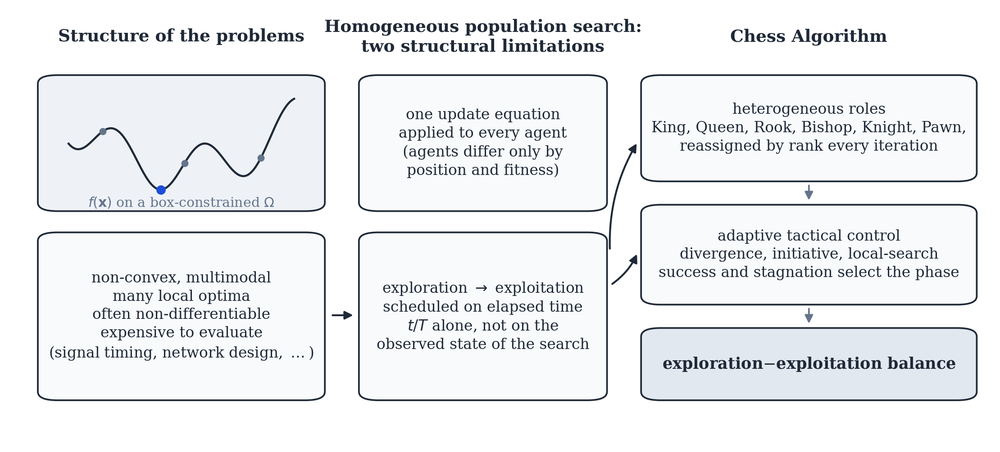
The field grew from two roots. Evolutionary computation gave us the Genetic Algorithm [3], [4] and Evolution Strategies [5]. Trajectory methods gave us Simulated Annealing [6], whose central idea, accepting a worse solution now and then so that a local minimum can be escaped, has proved one of the most durable in the field. Swarm intelligence arrived in the 1990s with Particle Swarm Optimization [7], Ant Colony Optimization [8], Differential Evolution [9], and later the Artificial Bee Colony [10]. More recently, Mirjalili and colleagues built a productive line of algorithms by abstracting the social and hunting behaviour of animals into compact operators: the Grey Wolf Optimizer [11], the Ant Lion Optimizer [12], the Dragonfly Algorithm [13], the Whale Optimization Algorithm [14], the Sine Cosine Algorithm [15], and the Salp Swarm Algorithm [16], among others.
Two patterns stand out in this literature. First, almost every swarm algorithm treats its agents identically: a single update equation is applied to all of them, and only position and fitness distinguish one agent from another. Division of labour among unequal agents, by contrast, is a well-established principle in biological systems and in human strategic behaviour alike. Second, the performance of a metaheuristic is largely determined by how it schedules the transition from exploration to exploitation [11], and mechanisms that adapt that transition to the observed search dynamics, rather than to elapsed time alone, remain uncommon.
The justification for proposing yet another metaheuristic should also be stated explicitly. The No-Free-Lunch theorem [17] rules out a universally dominant optimizer, so the aim of this work is not universal superiority but a substantively different inductive bias, together with an identification of the problem class for which that bias pays. A third consideration is critical rather than structural. The proliferation of metaphor-named algorithms has drawn severe and largely justified criticism [18], on the grounds that new vocabulary frequently repackages established operators without advancing the science. This paper accepts the substance of that criticism and builds the response into the study itself. Section 2.8 maps every mechanism of the proposed algorithm onto its established operator family with the corresponding citation, Section 7.1 measures each mechanism’s isolated contribution empirically, and the comparison roster includes two competition-grade optimizers, L-SHADE [19] and CMA-ES [20], so that the algorithm is assessed against the strongest representatives of the operator families it draws on rather than only against other metaphor-derived methods.
Chess offers precisely the two properties identified as absent above. Its pieces are radically unequal: the queen sweeps the whole board, rooks travel along files and ranks, bishops along diagonals, knights jump over anything in the way, and pawns crawl forward one square at a time while quietly defining the structure of the position. Mapped onto a search population, this suggests sub-groups performing qualitatively different moves around one common reference point, which in our setting is the best solution found so far and which we call the King.
The game also comes with a mature strategic vocabulary, refined over centuries of analysis. Development says: mobilize your forces early, consolidate later. A sacrifice gives up material now for a positional advantage later. Pinning immobilizes a piece against something more valuable behind it. Castling is a safeguarded structural rearrangement, en passant an opportunistic capture available only under narrow conditions, and the threefold-repetition rule declares a draw when the position keeps repeating. Each of these has a natural algorithmic reading: exploration schedules, acceptance of deteriorating moves, variable fixation, elite restructuring, adaptive local search, and diversity preservation, respectively.
The Chess Algorithm (CA) proposed here formalizes that mapping. Figure 2 states it precisely. Each piece becomes one movement geometry around the incumbent solution, and the figure names, for each, the search behaviour it produces and whether that behaviour serves exploration or exploitation. The right-hand column of the figure is deliberately not a claim of novelty, since Section 2.8 maps every one of these operators onto an established family with its canonical reference. One misunderstanding is worth preempting at once: CA does not play chess and does not search a game tree. It borrows the strategic grammar of the game and nothing else, and its per-iteration cost is comparable to that of GA or PSO.
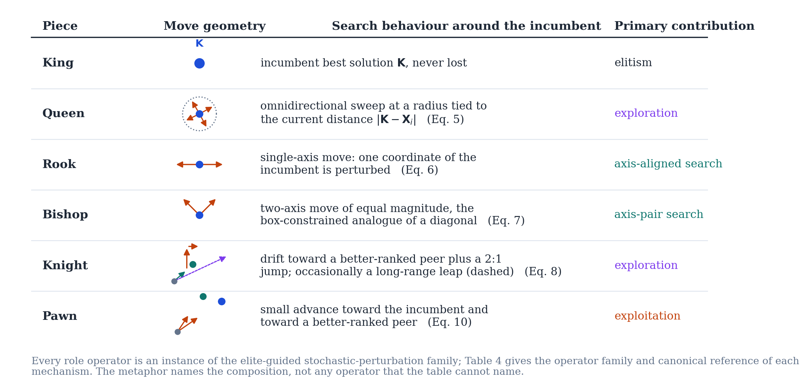
The contributions of this paper are the following. We give a complete mathematical specification of CA, covering initialization, rank-based role assignment, movement operators, strategic mechanisms, and the adaptive control layer that governs when each of them applies, including several operators new to this paper: Novotny interference, the knight’s fork, the royal council, a King’s-march blockade response, and a Tal-style speculative-sacrifice reheat. Every mechanism is then mapped onto its established operator family. We evaluate CA on six standard test functions in 30 dimensions, on the full CEC-2017 suite, on CEC-2022 at both official dimensionalities, on seven classic constrained engineering design problems, and on two transportation problems, against a roster that includes the competition-grade baselines L-SHADE and CMA-ES alongside GA, PSO, SA, GWO and WOA. Along the way we report a two-library data-integrity audit that identified six defective function implementations in a widely used third-party CEC-2017 port and restored all six from an independent implementation carrying the official reference data. We then take the algorithm apart, with a per-mechanism ablation, a one-at-a-time parameter sensitivity analysis, and a measured cost comparison with exact evaluation counts. Throughout, an ablation configuration with the adaptive layer disabled, CA-static, is carried alongside CA to isolate what that layer contributes, and the complete implementation is released open source.
It is worth stating the scope of our claims plainly. Against the classical and widely used metaheuristics in the roster, CA is consistently competitive and frequently significantly better, across synthetic suites, engineering design, and the transportation problems that motivated the work. Against the two competition-grade optimizers the ordering is reversed: L-SHADE and CMA-ES outperform CA on every problem class tested, and we report that wherever it occurs without qualification. The claim this paper defends is therefore narrower than a performance claim. CA is a transparent architecture whose every mechanism is specified mathematically, mapped to its operator family, and measured in isolation, and the ablation of Section 7 identifies precisely which of those mechanisms carry its performance, which in turn explains the standing of the specialized methods.
The remainder of the paper is organized as follows. Section 2 specifies the algorithm, its adaptive control layer, and its time and memory complexity. Section 3 reports the classical benchmark study, Section 4 and Section 5 the two CEC suites, and Section 6 the constrained engineering design problems. Section 7 takes CA apart through ablation, sensitivity and cost analysis. Section 8 and Section 9 present the transportation applications, and Section 10 concludes.
2 The Chess Algorithm
2.1 Conceptual mapping
CA maintains a population of \(N\) candidate solutions \(\mathbf{X}_i \in \Omega \subset \mathbb{R}^D\), treated as pieces playing toward the global optimum. Table 1 summarizes how the vocabulary of the game maps onto algorithmic mechanisms.
| Chess concept | Algorithmic role |
|---|---|
| King | Incumbent best solution (never lost) |
| Queen, Rook, Bishop, Knight, Pawn | Heterogeneous movement operators |
| Development (opening principle) | Time-decaying step-scale \(a(t)\) |
| Sacrifice | Probabilistic acceptance of worse moves (minor pieces only) |
| Pinning | Progressive freezing of coordinates to the King’s values |
| Castling | Safeguarded coordinate-block exchange King \(\leftrightarrow\) Rook |
| En passant | Opportunistic, self-adaptive local capture around the King |
| Pawn promotion | Rank-based role reassignment each iteration |
| Threefold repetition | Re-deployment of agents that collapse onto the King |
| Opening / middlegame / closed position / endgame | Position-dependent tactical phase, read each iteration (Section 2.6) |
| Nimzowitsch prophylaxis | Restrained, line-reopening response to premature convergence |
| Fork, interference, discovered attack, royal council | Additional movement and probe operators, active in specific phases |
| Windmill | Repeated extension of a successful King displacement (endgame) |
| Zugzwang / blockade | Stagnation-triggered waiting move, King’s march, and speculative sacrifice |
| Checkmate | Termination criterion |
One point deserves emphasis. CA borrows the strategic grammar of chess as an inductive bias, not the game itself. An iteration costs \(\mathcal{O}(ND + N \log N)\) arithmetic operations, that is the movement updates plus the sort that drives role assignment, and \(N + 3\) function evaluations, that is \(N\) piece moves plus three en-passant probes, with one extra castling probe every \(c\) iterations. That is the same order as GA, PSO, or GWO. Section 2.9 gives the full time and memory accounting, and the exact evaluation counts measured in the experiments are in Section 7.3.
2.2 Architecture overview
Before the components are defined one by one, Figure 3 shows how they are assembled into a single iteration, in the conventional flowchart notation: an oval for start and stop, a parallelogram for input and output, a diamond for a decision, and a rectangle for a process step. Three strands run inside the loop. The population is ranked, moved by role-specific operators, evaluated and filtered by an acceptance rule; the King runs its own local search through en passant, castling and the tactical probes; and the adaptive controller of Section 2.6 reads four statistics of the population and conditions the rates at which the tactical operators fire. Each process box names the equation or table in which it is specified, so the figure doubles as a map of the rest of this section.
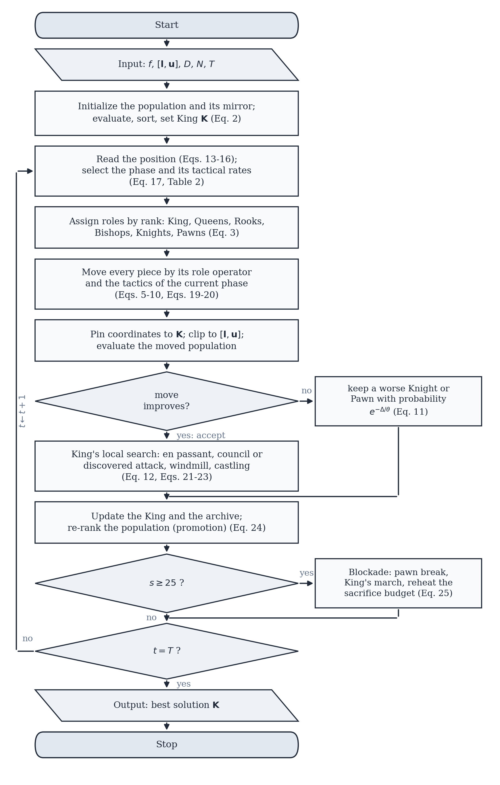
2.3 Initialization and role assignment
The board is set up by scattering the \(N\) pieces uniformly over the feasible box:
\[ \mathbf{X}_i^{(0)} = \mathbf{l} + (\mathbf{u} - \mathbf{l}) \circ \mathbf{r}_i, \qquad \mathbf{r}_i \sim \mathcal{U}(0,1)^D, \quad i = 1, \dots, N, \tag{2}\]
where \(\mathbf{l}\) and \(\mathbf{u}\) are the bound vectors and \(\circ\) is the elementwise (Hadamard) product. All positions are evaluated once and the population is sorted by fitness before the first move is played.
Let \(\pi\) be the permutation of \(\{1, \dots, N\}\) that sorts the population,
\[ f\big(\mathbf{X}_{\pi(1)}\big) \le f\big(\mathbf{X}_{\pi(2)}\big) \le \dots \le f\big(\mathbf{X}_{\pi(N)}\big). \tag{3}\]
The best agent \(\mathbf{K} = \mathbf{X}_{\pi(1)}\) is the King. The following ranks are partitioned, in order, into Queens \(\mathcal{Q}\), Rooks \(\mathcal{R}\), Bishops \(\mathcal{B}\), and Knights \(\mathcal{N}\), with
\[ |\mathcal{Q}| = \max(1, \lfloor \rho_q N \rceil), \quad |\mathcal{R}| = \max(1, \lfloor \rho_r N \rceil), \quad |\mathcal{B}| = \max(1, \lfloor \rho_b N \rceil), \quad |\mathcal{N}| = \max(1, \lfloor \rho_n N \rceil), \]
where \(\lfloor \cdot \rceil\) denotes rounding and \((\rho_q, \rho_r, \rho_b, \rho_n) = (0.10, 0.15, 0.15, 0.20)\). Whatever remains becomes the Pawns \(\mathcal{P}\). Because the assignment is redone after every iteration, a pawn that reaches a good region becomes a strong piece the next time roles are assigned. Promotion, in other words, falls out of re-ranking for free, and no extra machinery is needed for it.
Opening theory tells a player to develop pieces quickly, while endgames reward patience and precision. CA encodes this with a linearly decaying step-scale coefficient,
\[ a(t) = 2\left(1 - \frac{t}{T}\right), \tag{4}\]
with \(t\) the current iteration and \(T\) the total budget, following the convention popularized by Mirjalili et al. [11]. Every piece move scales with \(a(t)\), so the swarm plays big developing moves early and fine manoeuvres late.
2.4 Piece movement operators
Write \(\mathbf{L} = \mathbf{u} - \mathbf{l}\) for the box width and let \(\mathbf{r}, \mathbf{r}' \sim \mathcal{U}(0,1)^D\) be independent random vectors. The five mobile roles then move as follows. Figure 4 shows what each of the five equations below does geometrically, and makes the division of labour between them visible before the algebra is read: the Rook moves one coordinate and the Bishop two of equal magnitude, so both produce axis-structured candidates; the Queen sweeps in every direction at a radius tied to its distance from the King; the Knight combines a drift toward a better-ranked peer with an asymmetric jump; and the Pawn takes small steps toward both attractors, which is why its cloud is the tightest. The candidate clouds in the figure are not drawn by hand. They are 45 draws from the equation named in each panel, evaluated with a fixed seed.
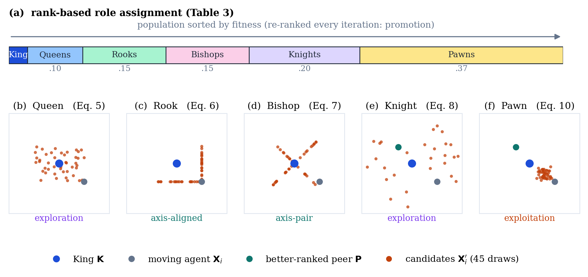
Queen (omnidirectional sweep). The queen circles the King at a radius tied to her current distance from him:
\[ \mathbf{X}_i' = \mathbf{K} + a(t)\,(2\mathbf{r} - \mathbf{1}) \circ \max\!\big(|\mathbf{K} - \mathbf{X}_i|,\ \boldsymbol{\sigma}\big), \tag{5}\]
where \(\boldsymbol{\sigma}\) is the King’s adaptive capture radius of Equation 12. The \(\max\) keeps the sweep from collapsing entirely, so queens never stall.
Rook (single-axis move). One random axis \(j\) is chosen and only that coordinate moves:
\[ X_{i,j}' = K_j + a(t)\,(2r - 1)\,\max\!\big(|K_j - X_{i,j}|,\ 0.01\,L_j\,a(t)\big). \tag{6}\]
Bishop (diagonal move). Two distinct axes \(j\) and \(k\) receive steps of equal magnitude and random relative sign, which is as close to a diagonal as a box-constrained space allows:
\[ \Delta = a(t)\,(2r-1)\,\max\!\Big(\tfrac{1}{2}\big(|K_j - X_{i,j}| + |K_k - X_{i,k}|\big),\ 0.01\,L\,a(t)\Big), \quad X_{i,j}' = K_j + \Delta,\ \ X_{i,k}' = K_k \pm \Delta. \tag{7}\]
Knight (L-shaped jump). The knight is the one piece that jumps over whatever stands in its way. Relative to a randomly chosen better-ranked peer \(\mathbf{P}\), it drifts toward the peer and then adds an asymmetric \(2{:}1\) jump on two random axes:
\[ \mathbf{X}_i' = \mathbf{X}_i + \mathbf{r} \circ (\mathbf{P} - \mathbf{X}_i), \qquad X_{i,j}' \mathrel{+}= 2\,a(t)\,\beta\,(2r-1), \quad X_{i,k}' \mathrel{+}= 1\,a(t)\,\beta\,(2r'-1), \tag{8}\]
with \(\beta = \overline{|\mathbf{P} - \mathbf{X}_i|}\) the mean coordinate gap. With small probability \(0.1\,a(t)/2\) the knight abandons this move and leaps: two coordinates are resampled uniformly in \(\Omega\). This leap is the algorithm’s main long-range restart device. The implementation also ships a heavy-tailed variant in which those two coordinates instead receive a Lévy-flight step \(0.05\,L\,s\) generated by Mantegna’s algorithm [21], the mechanism that Cuckoo Search made popular [22]:
\[ s = \frac{u}{|v|^{1/\beta_\ell}}, \qquad u \sim \mathcal{N}(0, \sigma_u^2), \quad v \sim \mathcal{N}(0, 1), \qquad \sigma_u = \left[ \frac{\Gamma(1+\beta_\ell)\,\sin(\pi \beta_\ell / 2)} {\Gamma\!\big(\tfrac{1+\beta_\ell}{2}\big)\,\beta_\ell\, 2^{(\beta_\ell - 1)/2}} \right]^{1/\beta_\ell}, \tag{9}\]
with tail index \(\beta_\ell = 1.5\). Every result in this paper uses the plain uniform leap; the Lévy option is documented for future study rather than used here.
Pawn (steady advance). Pawns take small steps toward the King and toward a random better-ranked piece \(\mathbf{B}\):
\[ \mathbf{X}_i' = \mathbf{X}_i + 0.3\,\mathbf{r} \circ (\mathbf{K} - \mathbf{X}_i) + 0.3\,\mathbf{r}' \circ (\mathbf{B} - \mathbf{X}_i). \tag{10}\]
2.5 Strategic mechanisms
Pinning. With probability \(p_{\text{pin}}(t) = 0.5\,t/T\), a random subset of at most \(30\%\) of an agent’s coordinates is pinned to the King’s values and excluded from perturbation. Early on, pinning is rare and the pieces develop freely. Late in the run it concentrates the search on a shrinking set of free dimensions around the incumbent, which is the exploitation behaviour expected during an endgame.
Sacrifice. A worsening move \(\Delta_i = f(\mathbf{X}_i') - f(\mathbf{X}_i) > 0\) made by a minor piece, a Knight or a Pawn, is still accepted with probability
\[ p_{\text{acc}} = \exp\!\left(-\frac{\Delta_i}{\theta(t)}\right), \qquad \theta(t) = \theta_0 \big(f_{\max} - f_{\min}\big)\, e^{-8 t / T}, \tag{11}\]
with \(\theta_0 = 0.1\). Readers will recognize the Metropolis rule of Simulated Annealing [6], but two chess-flavoured restrictions change its character. The temperature is scaled by the current fitness spread of the population, which makes the sacrifice budget self-calibrating across problems of wildly different magnitudes. And only minor pieces may be sacrificed, so that the King and the major pieces are never lost and the elite of the population cannot be eroded by the acceptance rule.
En passant (adaptive local capture). Once per iteration the King attempts an en-passant capture. Three trial points are drawn in a sparse Gaussian neighbourhood,
\[ \mathbf{Y}_m = \mathbf{K} + \boldsymbol{\sigma} \circ \mathbf{z}_m \circ \mathbf{m}_m, \qquad \mathbf{z}_m \sim \mathcal{N}(\mathbf{0}, \mathbf{I}),\quad m = 1,2,3, \tag{12}\]
where the random binary mask \(\mathbf{m}_m\) activates each coordinate with probability \(\max(0.2,\ 2/D)\). Any improving trial replaces the King. The radius \(\boldsymbol{\sigma}\) follows a success rule of the kind long used in Evolution Strategies [5]: multiply by \(1.3\) after a successful capture, by \(0.92\) after a failure, and after \(50\) consecutive failures reset to \(\boldsymbol{\sigma} = 0.05\,\mathbf{L}\max(a(t), 0.05)\), which is a stalemate-avoidance restart. In our experience this mechanism is what keeps CA improving deep into the run, long after a fixed-radius local search would have gone quiet.
Castling. Every \(c = 10\) iterations the King castles with the best Rook: a contiguous block of up to \(D/4\) coordinates is copied from the Rook into a candidate King, and the exchange is kept only if it improves the King. It is a safeguarded structural jump, useful when good partial solutions have been discovered on different files of the board and need splicing together.
Threefold repetition. If an agent coincides with the King to numerical precision, something that pinning can eventually cause, it is re-deployed uniformly in \(\Omega\), much as the threefold-repetition rule stops a game from going in circles. We did not add this rule for elegance. Early prototypes taught us that it is essential: without it, pinning breeds exact clones of the King, every gap-proportional step length collapses to zero, and the search dies quietly in place.
Checkmate. The algorithm stops after \(T\) iterations. A stagnation-based early stop would be easy to add, but we keep it disabled in all experiments so that every algorithm consumes the same core budget of \(N \times T\) population evaluations.
Two design properties follow from these rules and are worth stating before the adaptive layer is introduced. The first is elitism: the King’s fitness never increases, because the King is replaced only by strictly better points, whether through the population update, en passant, or castling. Together with the uniform probability mass that the Knight’s exploratory leap and the threefold-repetition re-deployment place over \(\Omega\) at every iteration, this puts CA in the class of elitist stochastic search methods for which convergence in probability to the global optimum as \(T \to \infty\) is standard [23]. Such asymptotic statements say nothing about behaviour within a finite budget of \(15{,}000\) evaluations, which is an empirical question and is the subject of Section 3. The second is the exploration and exploitation balance. Exploration rests mainly on the Knights (Equation 8) and on the Queens early in the schedule (Equation 5); exploitation rests on the Pawns (Equation 10), on pinning, and on the en-passant success rule (Equation 12). The balance shifts smoothly through \(a(t)\), \(p_{\text{pin}}(t)\) and \(\theta(t)\), and it adapts to the state of the search through the gap-proportional step lengths and the spread-scaled sacrifice budget of Equation 11.
2.6 Adaptive tactical control
The mechanisms above give CA its movement vocabulary. What remains is to say how CA decides, moment to moment, which of them to lean on. A grandmaster does not play the same combination of tactics in a wide-open middlegame as in a locked pawn structure or a simplified endgame, because the right tactic depends on the position and not on a move counter. CA answers this with a lightweight state machine that reads four cheap statistics of the population each iteration and switches the active tactical repertoire accordingly. Figure 5 summarizes the result.
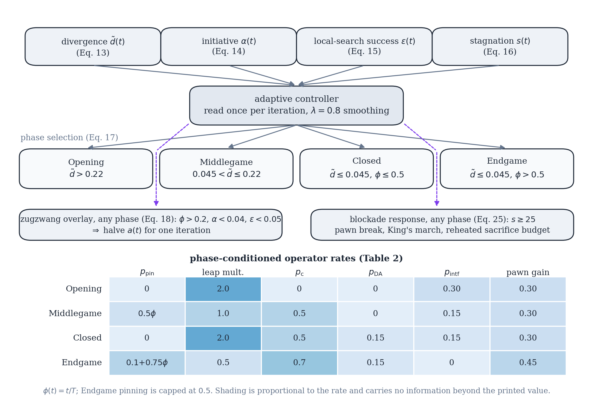
For controlled comparison, every experiment in this paper is also run under CA-static, which is the identical operator set with this state machine disabled, so that role-appropriate tactics fire at fixed, non-adaptive rates instead. CA-static is not a separate algorithm. It is an ablation configuration, used throughout Section 4 and Section 6 to isolate exactly what the adaptive layer contributes.
Reading the position. Four exponentially smoothed statistics (\(\lambda=0.8\)) are recomputed every iteration. The population’s normalized divergence from the King,
\[ d(t) = \frac{1}{\mathrm{Lspan}\sqrt{D}} \cdot \frac{1}{N-1}\sum_{i=2}^{N} \lVert \mathbf{X}_i^{(t)} - \mathbf{K}^{(t)} \rVert_2 , \qquad \tilde{d}(t) = 0.8\,\tilde{d}(t-1) + 0.2\, d(t), \tag{13}\]
answers the question “is the position open or closed?”, where \(\mathrm{Lspan}=\max_j(u_j-l_j)\). Two further exponential moving averages track the initiative,
\[ \alpha(t) = 0.8\,\alpha(t-1) + 0.2 \cdot \frac{1}{N}\sum_{i=1}^{N} \mathbb{1}[\text{move}_i \text{ accepted}], \tag{14}\]
and the technical success rate of the King’s own local search,
\[ \varepsilon(t) = \begin{cases} 0.8\,\varepsilon(t-1) + 0.2 & \text{en-passant capture succeeded at } t,\\ 0.8\,\varepsilon(t-1) & \text{otherwise.} \end{cases} \tag{15}\]
Finally, a stagnation counter borrows chess’s fifty-move rule. Rather than reset on any improvement whatsoever, it resets only on a materially significant one, exactly as fifty moves without a pawn push or a capture, not merely without a game-theoretically perfect move, are needed to claim a draw:
\[ s(t) = \begin{cases} 0, & f(\mathbf{K}^{(t)}) < f_{\text{ref}} - \max\!\big(10^{-4}|f_{\text{ref}}|,\ 10^{-10}\big),\\[2pt] s(t-1) + 1, & \text{otherwise,} \end{cases} \tag{16}\]
with \(f_{\text{ref}}\) updated to \(f(\mathbf{K}^{(t)})\) whenever \(s(t)=0\). Early prototypes used a naive counter that reset on any improvement at all. Because the en-passant rule of Equation 12 produces microscopic refinements routinely, that counter never accumulated enough to trigger the blockade response described below, even in runs that stayed visibly confined to a secondary basin for hundreds of iterations. Equation 16 fixes that.
Game phases. The smoothed divergence and the fraction of the budget elapsed, \(\phi(t)=t/T\), jointly select one of four phases:
\[ \text{phase}(t) = \begin{cases} \textsc{Opening}, & \tilde{d}(t) > 0.22,\\ \textsc{Middlegame}, & 0.045 < \tilde{d}(t) \le 0.22,\\ \textsc{Closed}, & \tilde{d}(t) \le 0.045 \text{ and } \phi(t) \le 0.5,\\ \textsc{Endgame}, & \tilde{d}(t) \le 0.045 \text{ and } \phi(t) > 0.5. \end{cases} \tag{17}\]
The two thresholds were checked, though not exhaustively swept, against the combinations \(\delta_{\text{open}} \in \{0.15, 0.22, 0.30\}\) and \(\delta_{\text{end}} \in \{0.03, 0.045, 0.06, 0.09\}\) on two CEC-2017 functions, Rastrigin and Hybrid Function 4 at \(D=30\). The pair \(\delta_{\text{open}}=0.22\) and \(\delta_{\text{end}}=0.045\) was the best or near-best on both and is used throughout this paper. A full sensitivity study across the complete parameter space, noted as a limitation in Section 10, remains future work.
The Closed phase answers a failure mode found during tuning. A population can collapse to a small radius around the King early in the search, which is premature convergence rather than a genuine endgame, and treating every low-divergence state as an endgame made this worse, since endgame tactics such as heavy pinning and aggressive pawn advance accelerate the collapse instead of reversing it. Reading an early collapse as a prematurely closed position and answering with Nimzowitschian prophylaxis, that is restraint and the reopening of lines rather than immediate commitment, removes the pathology. Each phase activates a different parameter vector, summarized in Table 2.
| Phase | \(p_{\text{pin}}\) | Leap mult. | \(p_{\text{c}}\) | \(p_{\text{DA}}\) | \(p_{\text{intf}}\) | Pawn gain |
|---|---|---|---|---|---|---|
| Opening | \(0\) | \(2.0\) | \(0\) | \(0\) | \(0.30\) | \(0.30\) |
| Middlegame | \(0.5\,\phi(t)\) | \(1.0\) | \(0.5\) | \(0\) | \(0.15\) | \(0.30\) |
| Closed | \(0\) | \(2.0\) | \(0.5\) | \(0.15\) | \(0.15\) | \(0.30\) |
| Endgame | \(0.1{+}0.75\,\phi(t)^{*}\) | \(0.5\) | \(0.7\) | \(0.15\) | \(0\) | \(0.45\) |
One overlay applies regardless of phase. If the population has lost the initiative and the King’s local search has gone quiet at the same time,
\[ \text{Zugzwang}(t) \iff \phi(t) > 0.2 \ \wedge\ \alpha(t) < 0.04 \ \wedge\ \varepsilon(t) < 0.05, \tag{18}\]
the development coefficient is halved for that one iteration, \(a(t)\leftarrow a(t)/2\). This is a triangulation move: change nothing structurally, spend a tempo, and let the next reading of the position be more informative before committing to a new phase.
Tactical operators. Five further operators are what the phases of Table 2 switch between. Figure 6 shows where each of them places a candidate relative to the incumbent and the elite, which is the property that distinguishes them from one another and from the role moves of Figure 4.
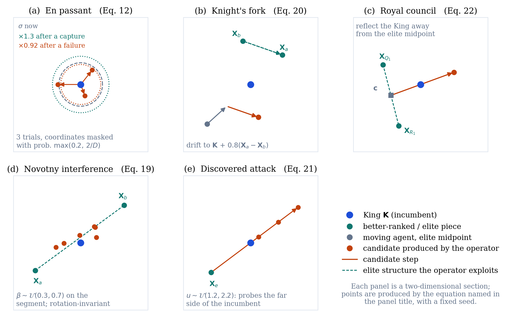
The first is Novotny interference, played by Bishops. Named for the classical motif in which a piece is sacrificed on a square that blocks two enemy lines of defence at once, a Bishop is occasionally interposed on the segment between two distant, higher-ranked pieces rather than moving diagonally around the King:
\[ \mathbf{X}_i' = \beta\, \mathbf{X}_a + (1-\beta)\, \mathbf{X}_b + 0.02\, a(t)\, \mathbf{L} \circ \mathbf{z}, \qquad \beta \sim \mathcal{U}(0.3, 0.7),\quad \mathbf{z} \sim \mathcal{N}(\mathbf{0}, \mathbf{I}), \tag{19}\]
with \(a\) and \(b\) drawn without replacement from the fitter half of the population, at probability \(p_{\text{intf}}\) from Table 2. Being a convex recombination of two arbitrary population members rather than a step along a coordinate axis, it is rotation-invariant, and it is the mechanism most directly responsible for CA’s gains on the CEC-2017 hybrid and composition functions (Section 4).
The second is the knight’s fork. With probability \(0.5\), a Knight that does not take its exploratory leap instead plays
\[ \mathbf{X}_i' = \mathbf{X}_i + \mathbf{r} \circ (\mathbf{K} - \mathbf{X}_i) + 0.8\,(\mathbf{X}_a - \mathbf{X}_b), \qquad a, b \sim \mathcal{U}\{1,\dots,i-1\},\ \ \mathbf{r}\sim\mathcal{U}(0,1)^D, \tag{20}\]
drifting toward the King while inheriting the differential structure of two better-ranked peers at once, which is to say attacking two targets simultaneously, in the spirit of the tactic that gives the move its name.
The third is the discovered attack. An early version applied the geometry below to every Rook as a population move, and tuning showed that to be tactically unsound at that scale, since the candidate is accepted by the ordinary improvement rule almost every time it is tried, collapsing the Rook sub-population onto the King-elite line within a handful of iterations. Restricted instead to a single, strictly elitist probe competing for one of the King’s own en-passant trials, and active only in the Closed and Endgame phases,
\[ \mathbf{Y}_{\text{DA}} = \mathbf{X}_e + u\,(\mathbf{K} - \mathbf{X}_e), \qquad u \sim \mathcal{U}(1.2, 2.2),\quad e \sim \mathcal{U}\{1,2,3\}, \tag{21}\]
it recovers the intended effect, probing the far side of the incumbent along an elite-King line, without the pathology. The finding generalizes: a tactic that is sound for a single elite piece can destabilize an entire role class, much as a discovered attack that wins material for one player becomes self-defeating if every piece on the board plays it at once.
The fourth is the royal council, which competes with the discovered attack for the same probe slot, the two being mutually exclusive and selected by relative probability:
\[ \mathbf{Y}_{\text{council}} = \mathbf{K} + 1.5\,u\,(\mathbf{K} - \mathbf{c}), \qquad \mathbf{c} = \tfrac{1}{2}(\mathbf{X}_{\text{Q}_1} + \mathbf{X}_{\text{R}_1}),\quad u \sim \mathcal{U}(0,1), \tag{22}\]
reflecting the King away from the midpoint of the best Queen and the best Rook. Where isotropic Gaussian probes are blind to the shape of the elite, this reflection is population-shaped: when the elite lies strung along a narrow curved valley, which is the typical geometry along an active inequality constraint in the engineering problems of Section 6, it points down the valley rather than across it. This single mechanism closed most of the welded-beam gap observed in early prototypes.
The fifth is the windmill. In the Endgame phase only, a successful en-passant or council capture with displacement \(\boldsymbol{\delta}=\mathbf{K}^{(t)}-\mathbf{K}^{(t)}_{\text{pre}}\) is extended,
\[ \mathbf{K} \leftarrow \mathbf{K} + \boldsymbol{\delta} \quad \text{while } f(\mathbf{K}+\boldsymbol{\delta}) < f(\mathbf{K}),\quad \text{up to 3 repetitions,} \tag{23}\]
echoing the chess windmill’s repeating sequence of discovered checks, each one harvesting material.
Overprotection archive. Aron Nimzowitsch’s overprotection principle counsels defending a valuable point with more force than strictly necessary, so that pieces freed from other duties have a strong square to retreat to. CA archives up to five mutually distant past King positions,
\[ \text{admit } \mathbf{K}^{(t)} \iff f(\mathbf{K}^{(t)}) < f(\mathbf{K}^{(t-1)}) \ \wedge\ \min_{\mathbf{a}\in\mathcal{A}} \frac{\lVert \mathbf{K}^{(t)}-\mathbf{a}\rVert}{\mathrm{Lspan}\sqrt{D}} > 0.15, \tag{24}\]
evicting the worst by fitness on overflow. These strongpoints are the fallback used by the blockade response.
Blockade: pawn break, King’s march, and speculative sacrifice. When the fifty-move counter reaches \(s(t) \ge 25\) in Equation 16, three mechanisms fire together. All Pawns are re-deployed uniformly at random, a pawn break that opens lines in a closed position. The King probes six long-radius candidates at three scales,
\[ \mathbf{Y}_m = \mathbf{K} + \rho_m\, \mathbf{L}\circ\mathbf{z}_m, \qquad \rho_m \in \{0.1,0.1,0.2,0.2,0.4,0.4\},\quad \mathbf{z}_m \sim \mathcal{N}(\mathbf{0},\mathbf{I}), \tag{25}\]
then consolidates the best candidate with an eight-step greedy local refinement of shrinking radius before comparing it against the incumbent King. The order is deliberate: refining before comparing lets the march accept a basin whose raw landing point is worse than the incumbent but whose refined optimum is better, while the final elitist comparison still guarantees that the King’s fitness sequence never worsens. At the same time the sacrifice budget of Equation 11 is reheated tenfold for the next ten iterations, modelled on Mikhail Tal’s willingness to give up material for an unquantifiable positional initiative rather than keep playing conservative moves that have stopped producing progress, and, if the archive of Equation 24 is non-empty, the worst-ranked Queen is replaced by a random archived strongpoint, which gives the population a proven foothold rather than a blind restart.
Opening principle: opposition-based initialization. The initial population is evaluated together with its reflection through the board’s centre, \(\mathbf{X}^{(0)}_{\text{mirror}}=\mathbf{l}+\mathbf{u}-\mathbf{X}^{(0)}\), and the fitter half of the combined \(2N\) candidates is kept. Isolating this mechanism during tuning revealed a mixed effect, better on two of four micro-benchmark problems tested and worse on the other two, rather than a consistent gain. It is kept by default because it never produced a large regression and costs only one extra population evaluation, paid once; its dedicated ablation is reported in Section 7.1.
2.7 Parameter summary and pseudocode
Table 3 collects the base parameters and the single configuration used everywhere in this paper. Several of them, including the pinning probability and the knight-leap rate, are further modulated by the phase-conditioned schedule of Table 2 once the adaptive control layer is active, while CA-static uses the values below unmodulated throughout. No per-problem tuning was done, for CA, for CA-static, or for any competitor, and every result in this paper comes from this one configuration. How much that costs is measured in Section 7.2: of the parameters below, only the role fractions change performance significantly at the granularity tested.
| Parameter | Symbol | Value |
|---|---|---|
| Role fractions (Queen / Rook / Bishop / Knight) | \(\rho_q,\rho_r,\rho_b,\rho_n\) | \(0.10 / 0.15 / 0.15 / 0.20\) |
| Development schedule | \(a(t)\) | \(2(1 - t/T)\) |
| Pinning probability / cap | \(p_{\text{pin}}(t)\) | \(0.5\,t/T\), at most \(30\%\) of coordinates |
| Sacrifice constant | \(\theta_0\) | \(0.1\) |
| Castling period | \(c\) | \(10\) iterations |
| En-passant probes per iteration | — | \(3\) |
| En-passant adaptation (success / failure / reset) | — | \(\times 1.3\) / \(\times 0.92\) / after \(50\) failures |
| Knight exploratory-leap distribution | — | uniform (Lévy, \(\beta_\ell = 1.5\), optional) |
The complete step is given below. Lines 4 and 5 are the controller strand of Figure 3, lines 6 to 10 the population strand, and lines 11 to 16 the King’s own local search.
Algorithm 1: Chess Algorithm (CA)
Input: f, bounds [l, u], dimension D, population N, iterations T
Output: King K
1 X <- init(N, l, u) and mirror l+u-X; evaluate; keep fitter N (Eq. 2)
2 sort X; K <- X(1); sigma <- 0.1 L; archive <- {}
3 for t = 0 to T-1 do
4 a <- 2(1 - t/T); update d, alpha, epsilon, s (Eqs. 13-16)
5 select the phase and read its rates (Eq. 17, Table 2)
6 assign roles by rank: King, Queens, Rooks, Bishops,
Knights, Pawns (Eq. 3)
7 move every piece by its role operator (Eqs. 5-10)
8 apply the phase tactics: fork, interference, leap (Eqs. 19-20)
9 pin coordinates to K with prob. p_pin; clip; evaluate
10 accept improvements; keep a worse Knight or Pawn with
probability e^(-delta/theta) (Eq. 11)
11 en passant: 3 masked trials around K; adapt sigma (Eq. 12)
12 add one council or discovered-attack probe (Eqs. 21-22)
13 if Endgame and a probe succeeded then extend it (Eq. 23)
14 if t mod c = 0 then castle: swap a block K <-> best Rook
15 re-deploy agents identical to K; update K and archive (Eq. 24)
16 if s >= 25 then blockade: pawn break, King's march,
reheat theta (Eq. 25)
17 end for
18 return K2.8 Relation to established operator families
The criticism of metaphor-driven algorithm design articulated by Sörensen [18] deserves a direct answer rather than a defensive one. A vocabulary borrowed from a game can obscure the fact that the underlying operators are established ones, it can impede comparison with prior work, and it can inflate claims of novelty. What we owe the reader is a precise statement of what each mechanism is mathematically and where it sits in the existing taxonomy. Table 4 provides that statement for every CA mechanism.
| CA mechanism | Operator family | Canonical reference |
|---|---|---|
| Role-based moves (Queen, Rook, Bishop, Knight, Pawn) | Elite-guided stochastic perturbation, heterogeneous step geometry | [7], [11] |
| Development schedule \(a(t)\) | Time-decreasing step-size scheduling | [11] |
| Sacrifice (Equation 11) | Metropolis acceptance with population-scaled temperature | [6] |
| En passant \(\boldsymbol{\sigma}\) rule (Equation 12) | Success-rule step-size adaptation, \((1{+}\lambda)\)-ES | [5], [20] |
| Knight’s fork (Equation 20) | Differential mutation (current-to-best with difference vector) | [9] |
| Novotny interference (Equation 19) | Arithmetic (convex) recombination | [4] |
| Royal council (Equation 22) | Simplex-type reflection away from an elite centroid | [24] |
| Discovered attack (Equation 21) | Line extrapolation through the incumbent | [24] |
| Windmill (Equation 23) | Success-directed displacement repetition | [5] |
| Pinning | Block-coordinate fixation (axis-aligned subspace exploitation) | — |
| Castling | Segment (block) crossover with elitist acceptance | [3] |
| Threefold repetition | Diversity maintenance by re-initialization | [4] |
| Blockade response (Equation 25) | Partial restart with temperature reheating | [6] |
| Phase state machine; zugzwang (Equation 17) | Adaptive parameter control | [25] |
| Opposition-based initialization | Opposition-based learning | [26] |
Stated in these terms, CA is a composition of operators from the evolutionary-computation, swarm and trajectory traditions, coordinated by an adaptive control layer and organized around a heterogeneous-role architecture. The chess vocabulary contributes no operator that the table cannot name. What it contributes is a compact and internally consistent language for a particular composition, that is which operators are present, at what rates, and under which population states, and that composition, not any single operator, is the algorithmic claim of this paper. Two consequences follow. First, every mechanism named in Table 1 is defined mathematically in this section and measured in isolation in Section 7.1, so the metaphor never substitutes for specification or for evidence. Second, the mapping generates a falsifiable expectation: if CA’s performance rests principally on a small subset of these operator families, then specialized algorithms built purely on those families should match or exceed CA wherever their assumptions hold. The roster of Section 4 through Section 9 includes L-SHADE [19] and CMA-ES [20], the competition-refined embodiments of the differential-mutation and step-size-adaptation families respectively, precisely to test that expectation, and Section 7.1 returns to it quantitatively.
2.9 Computational and memory complexity
The cost of CA is dominated by four operations per iteration. Sorting the population to assign roles costs \(\mathcal{O}(N \log N)\) comparisons. Moving every agent under its role operator, applying the pin mask, and clipping to the bounds are all elementwise over the \(N \times D\) population, hence \(\mathcal{O}(ND)\). Evaluating the moved population costs \(N\) objective calls. The King’s local search adds a constant number of calls per iteration: three en-passant probes, one council or discovered-attack probe, at most three windmill extensions in the Endgame phase, one castling probe every \(c\) iterations, and fourteen further calls on the rare iterations when the blockade of Equation 25 fires. The controller itself is cheap, since the divergence of Equation 13 costs \(\mathcal{O}(ND)\) and the three remaining statistics \(\mathcal{O}(N)\), while the archive admission test of Equation 24 costs \(\mathcal{O}(|\mathcal{A}|D)\) with \(|\mathcal{A}| \le 5\).
Writing \(C_f\) for the cost of one objective evaluation, the total time complexity over the whole run is therefore
\[ \mathcal{O}\Big( T \big( ND + N \log N + (N + \kappa)\, C_f \big) \Big), \qquad \kappa \le 8, \tag{26}\]
where \(\kappa\) collects the King’s per-iteration probes, that is three en-passant trials, one council or discovered-attack probe, up to three windmill extensions and the amortized castling probe; the fourteen blockade calls sit outside \(\kappa\) because they fire on a small fraction of iterations. Since \(C_f\) dominates the arithmetic on any objective of practical interest, the operative figure is the evaluation count, \(T(N+\kappa)\), and the measured overhead of the \(\kappa\) term is \(12.4\%\) of the core budget \(NT\) (Section 7.3). The arithmetic term \(\mathcal{O}(TND)\) is identical to that of GA, PSO, GWO and WOA, none of which sorts, and the \(\mathcal{O}(TN\log N)\) sort that CA adds is negligible beside it whenever \(D > \log N\), which holds in every experiment reported here.
Memory is likewise linear in the size of the population. CA stores the population and the candidate population, \(2ND\) reals; the fitness vector and the candidate fitness vector, \(2N\) reals; the per-agent pin mask, \(ND\) booleans; the adaptive radius \(\boldsymbol{\sigma}\), \(D\) reals; and the overprotection archive, at most \(5D\) reals with its five fitness values. The convergence history adds \(T\) reals. The peak occurs once, at initialization, where the opposition step of Section 2.6 holds \(2N\) candidates at the same time. The total is
\[ \mathcal{O}(ND + T), \tag{27}\]
with no dependence on the number of strategic mechanisms, since every mechanism operates in place on the arrays already listed. For reference, PSO stores position, velocity and personal best, which is \(3ND\) reals, and GWO stores the population plus three leaders, so CA’s footprint is of the same order and of comparable constant. Neither the time nor the memory cost of CA, in other words, is where its twelve mechanisms show up; they show up in the evaluation count, and that is measured exactly in Section 7.3.
3 Benchmark Experiments
3.1 Experimental protocol
CA is compared against its own non-adaptive ablation CA-static (Section 2.6) and four established metaheuristics: a real-coded GA with tournament selection, BLX-\(\alpha\) crossover, Gaussian mutation and elitism [3], [4]; PSO with linearly decreasing inertia [7]; SA [6], granted a population-equivalent evaluation budget so that the comparison stays fair; and GWO [11].
The suite consists of six standard functions covering unimodal, ill-conditioned and highly multimodal terrain (Table 5):
| Function | Type | Search domain | \(f^{*}\) |
|---|---|---|---|
| F1 Sphere | Unimodal | \([-100, 100]^{30}\) | 0 |
| F2 Rosenbrock | Unimodal, ill-conditioned valley | \([-30, 30]^{30}\) | 0 |
| F3 Rastrigin | Multimodal | \([-5.12, 5.12]^{30}\) | 0 |
| F4 Griewank | Multimodal | \([-600, 600]^{30}\) | 0 |
| F5 Ackley | Multimodal | \([-32, 32]^{30}\) | 0 |
| F6 Schwefel 2.22 | Unimodal, non-separable norm | \([-10, 10]^{30}\) | 0 |
Every algorithm runs with a population of \(N = 30\) for \(T = 500\) iterations, a shared core budget of \(15{,}000\) population evaluations per run. CA additionally spends three en-passant probes per iteration, one castling probe every ten iterations, and occasional windmill and blockade probes (Section 2), and its measured consumption is \(12.4\%\) above the core budget, with the exact accounting given in Section 7.3. The gaps reported below span orders of magnitude, so that overhead cannot be what drives them, and GWO beats CA in spite of it. Each algorithm-function pair is repeated over \(30\) independent runs, and all algorithms share the same seed at a given run index, so every method faces the same initial conditions. No parameters were tuned per problem for any method.
Statistics follow the recommendations of Derrac et al. [27]: one-way ANOVA to establish that the algorithm factor matters at all, then pairwise two-sided Wilcoxon rank-sum tests of CA against each competitor at \(\alpha = 0.05\), which make no normality assumption about the final-error distributions.
3.2 Results
Table 6 reports the mean and standard deviation of the final objective value for every algorithm-function pair, with the algorithms as rows and the test functions as columns. The best and worst individual runs, which do not fit that orientation, are reported for every cell in Table 32.
| Algorithm | F1 Sphere | F2 Rosenbrock | F3 Rastrigin | F4 Griewank | F5 Ackley | F6 Schwefel 2.22 |
|---|---|---|---|---|---|---|
| CA | 6.16e-05 ±1.15e-04 | 77.56 ±43.83 | 19.53 ±8.02 | 0.008177 ±0.007777 | 0.06049 ±0.3189 | 0.001554 ±6.93e-04 |
| CA-static | 4.63e-06 ±4.25e-06 | 55.13 ±39.69 | 19.24 ±4.897 | 0.01123 ±0.01143 | 0.03902 ±0.2073 | 8.41e-04 ±3.82e-04 |
| GWO | 4.68e-31 ±8.19e-31 | 26.83 ±0.6174 | 10.23 ±10.78 | 0.004303 ±0.009094 | 3.32e-14 ±4.37e-15 | 9.93e-19 ±9.46e-19 |
| PSO | 0.8455 ±0.7216 | 6445 ±2.238e+04 | 59.71 ±14.84 | 0.6164 ±0.2367 | 1.045 ±0.5491 | 0.7941 ±2.486 |
| GA | 0.09475 ±0.05399 | 105.6 ±46.33 | 19.54 ±6.823 | 0.2816 ±0.07971 | 0.07757 ±0.01486 | 0.07438 ±0.01815 |
| SA | 1.013e+04 ±2218 | 2.18e+07 ±5.69e+06 | 210.5 ±29.51 | 91.9 ±23.24 | 4.483 ±0.3618 | 1.12e+07 ±2.88e+07 |
Figure 7 shows the median best-so-far curves, and three patterns are apparent in them. On F1, F4 and F6, CA keeps improving throughout the run, because the en-passant success rule continues to find improvements deep into the later iterations, whereas GA and PSO stagnate hundreds of iterations earlier. On the ill-conditioned Rosenbrock valley (F2), convergence slows substantially for every population method, with CA and GA tracking each other closely throughout. CA and CA-static track each other almost exactly on every function, which confirms visually the near-total absence of a significant difference between them on this suite. GWO shows its well-documented strength on this classical suite, converging fastest and to the lowest values throughout. The distributions of final values underlying these curves are shown in Figure 8.


One-way ANOVA confirms that the algorithm factor is highly significant on every function (Table 7), and the pairwise Wilcoxon tests of Table 8 give the sharper picture.
| Statistic | F1 Sphere | F2 Rosenbrock | F3 Rastrigin | F4 Griewank | F5 Ackley | F6 Schwefel 2.22 |
|---|---|---|---|---|---|---|
| \(F\) | 605.1 | 427.0 | 777.7 | 451.7 | 951.0 | 4.4 |
| \(p\) | 5.6e-108 | 1.1e-95 | 5.4e-117 | 1.2e-97 | 2.7e-124 | 8.4e-04 |
| Comparison | F1 Sphere | F2 Rosenbrock | F3 Rastrigin | F4 Griewank | F5 Ackley | F6 Schwefel 2.22 |
|---|---|---|---|---|---|---|
| CA vs CA-static | 1.48e-03 (-) | 6.04e-02 (=) | 6.68e-01 (=) | 7.01e-01 (=) | 1.10e-02 (-) | 5.10e-05 (-) |
| CA vs GWO | 2.87e-11 (-) | 2.95e-08 (-) | 6.16e-05 (-) | 1.48e-05 (-) | 2.87e-11 (-) | 2.87e-11 (-) |
| CA vs PSO | 2.87e-11 (+) | 2.55e-09 (+) | 6.37e-11 (+) | 2.87e-11 (+) | 4.40e-10 (+) | 2.87e-11 (+) |
| CA vs GA | 2.87e-11 (+) | 1.09e-03 (+) | 5.15e-01 (=) | 2.87e-11 (+) | 5.32e-10 (+) | 2.87e-11 (+) |
| CA vs SA | 2.87e-11 (+) | 2.87e-11 (+) | 2.87e-11 (+) | 2.87e-11 (+) | 2.87e-11 (+) | 2.87e-11 (+) |
3.3 Discussion
Taken together, the tables support a differentiated conclusion rather than a single summary statement. Against PSO and SA, CA is significantly better on all six functions. Against GA it wins five of six, on Sphere, Rosenbrock, Griewank, Ackley and Schwefel 2.22, while Rastrigin ends in a statistical tie. Against GWO the outcome is reversed: GWO is significantly better on all six, consistent with the aggressive exploitation it is known for on exactly this suite [11]. We state that limitation plainly. On standard unconstrained test functions with central global optima, CA does not surpass GWO.
The comparison against CA-static deserves particular attention, because it contradicts the expectation that motivated the adaptive layer in the first place. On this classical, low-structure suite, disabling the layer never hurts and sometimes helps: CA-static is significantly better than CA on Sphere, Ackley and Schwefel 2.22 and statistically tied on the other three, and there is not a single function on which the adaptive layer wins outright. We read this as an informative negative result. The phase-reading machinery is built to recognize open, closed and endgame structure, and a smooth unimodal or mildly multimodal function in a fixed box offers it little of that structure to exploit, so the state machine spends its overhead reading a position that barely changes. The CEC-2017 and engineering-design landscapes of Section 4 and Section 6 are exactly where that overhead should start paying for itself, and whether it does is the empirical question those sections answer.
The practical implication is that these rankings are problem-dependent, which is precisely the situation the No-Free-Lunch theorem predicts [17]. The relevant question is therefore not whether CA outperforms its competitors on the Sphere function, but whether it holds up on a harder standardized synthetic suite and on structured engineering problems. That is where we go next. Section 4 extends the comparison to the full CEC-2017 suite, Section 6 turns to constrained engineering design, and Section 8 returns to the transportation motivation that opened the paper. The ranking does change.
4 The Full CEC-2017 Benchmark Suite
4.1 Motivation and roster
The six-function suite of Section 3 is standard but narrow, and current practice in this literature, including the practice established by our own baseline GWO [11], requires that a claim of competitiveness be validated on a larger, harder, independently curated suite. CEC-2017 meets that requirement. It comprises 29 usable functions, shifted, rotated, and in many cases built by hybridizing or composing several base functions, so that no algorithm can exploit coordinate-axis alignment or a single basin shape.1
We evaluate CA (Section 2.6) and its non-adaptive ablation CA-static against six competitors: GWO, PSO, and GA, our own implementations from Section 3; WOA [14], third-party, at mealpy defaults, as in Section 9; and two competition-grade adaptive optimizers included in answer to the legitimate criticism that new metaheuristics are too often benchmarked only against classical or metaphor-derived baselines [18]. These are L-SHADE [19], the success-history adaptive differential-evolution lineage that has defined the state of the art on CEC suites since 2014, via the niapy implementation [29], and CMA-ES [20], the canonical covariance-matrix-adaptation evolution strategy, via Hansen’s reference implementation pycma [30]. All algorithms run at \(D=30\) with population \(30\), \(500\) iterations, and \(30\) independent runs per algorithm-function pair, run \(r\) of every algorithm sharing seed \(\text{SEED}_0+r\) on the unit hypercube, with real bounds folded into the decoder as throughout this paper. Budget parity for the two additions is handled explicitly. CMA-ES runs \(\lambda=30\) for \(500\) generations, which is exactly the \(15{,}000\)-evaluation core budget. L-SHADE, whose linear population-size reduction is intrinsic to the algorithm and shrinks the population from \(30\) toward \(4\) as the budget is consumed, is capped at \(15{,}500\) evaluations, within the measured consumption of CA itself (Section 7.3). Neither addition therefore holds a budget advantage over any incumbent.
4.2 Data integrity: auditing the reference implementation
CEC-2017 was accessed through opfunu v1.0.1, a third-party Python port of the official suite, and two independent checks were applied before any result was trusted. First, every candidate function was evaluated at the library’s own reported global optimizer \(\mathbf{x}^{*}\), requiring \(|f(\mathbf{x}^{*})-f^{*}| \le 10^{-6}\max(1,|f^{*}|)\). This check is necessary but not sufficient, since it verifies the function at one point and says nothing about the rest of the domain. Second, we required the landscape to be discriminative: F5 (Shifted-and-Rotated Schaffer F7) passed the first check exactly, with \(f(\mathbf{x}^{*})=f^{*}=500.0\), yet random samples spanning the entire search box returned values between \(500.15\) and \(500.55\), a surface so nearly flat that no optimizer, ours or any competitor’s, could extract a meaningful gradient from it.
A function can pass both checks and still be broken elsewhere in the domain. Five further functions were caught only empirically, during optimization itself, because at least one algorithm in the roster, and in the worst cases nearly every algorithm including the weakest, returned a best-of-30-runs value that is impossible by definition under a correct \(f^{*}\). Four surfaced in the original six-algorithm runs. A fifth, F16, surfaced only once the stronger eight-algorithm roster was added, with CMA-ES locating points \(78\) units below the claimed optimum, which illustrates why stronger baselines also strengthen data auditing. Table 9 collects the evidence for all six defective labels; the defective raw numbers are committed in the repository (results/cec2017_opfunu_defect_evidence.csv) rather than quietly dropped.
opfunu CEC-2017 port: the six labels excluded, with the observed evidence of an implementation defect in each case.
| Label | opfunu function |
Claimed \(f^{*}\) | Defect observed |
|---|---|---|---|
| F5 | Shifted and Rotated Schaffer F7 | 500.0 | near-flat: random samples across the box span only \([500.12, 500.80]\) (std \(0.13\)) |
| F9 | Shifted and Rotated Schwefel | 900.0 | 10-run CA probe found a best value of \(-4{,}586.0\), a full \(5{,}486\) units below the claimed optimum |
| F15 | Hybrid Function 6 | 1500.0 | best-of-run value \(-634.7\) observed below claimed optimum |
| F16 | Hybrid Function 7 | 1600.0 | best-of-run value \(-78.1\) observed below claimed optimum (surfaced only under the 8-algorithm roster) |
| F19 | Hybrid Function 10 | 1900.0 | best-of-run value \(-429.3\) observed below claimed optimum |
| F21 | Composition Function 2 | 2100.0 | best-of-run value \(-9{,}592.4\) observed below claimed optimum |
Excluding defective implementations is only half of a defensible procedure. The other half is establishing whether the functions themselves can be evaluated correctly from an independent source. Each excluded label was therefore cross-validated against a second, independent Python implementation, cec2017-py [31], which is adapted directly from the official C implementation and its reference data files and retains the official numbering, so that paper label \(\mathrm{F}n\) is audited against official \(\mathrm{F}(n{+}1)\). Each official counterpart was subjected to the full three-part audit: the one-point preflight, a landscape-discriminativeness check, and a ten-run below-optimum probe under the suite protocol. All six pass all three checks, F5 included, whose official Schaffer F7 landscape is entirely discriminative, with a random-sample standard deviation of \(40\) against \(0.1\) in the opfunu port, and F9, whose official Schwefel landscape shows no below-optimum behaviour at all. Table 10 reports the audit in full.
| Label | Official func | f(shift+eps) | Official f* | Preflight err | Random-100 std | CA min (10 runs) | Worst below f* | Verdict |
|---|---|---|---|---|---|---|---|---|
| F5 | F6 | 600.000 | 600.0 | 0.0000 | 40.06 | 629.883 | +0.000 | Pass |
| F9 | F10 | 1000.000 | 1000.0 | 0.0004 | 1112 | 3542.222 | +0.000 | Pass |
| F15 | F16 | 1600.002 | 1600.0 | 0.0018 | 6.172e+04 | 2057.193 | +0.000 | Pass |
| F16 | F17 | 1700.000 | 1700.0 | 0.0001 | 5.061e+07 | 1919.152 | +0.000 | Pass |
| F19 | F20 | 2000.023 | 2000.0 | 0.0231 | 477.8 | 2205.239 | +0.000 | Pass |
| F21 | F22 | 2200.000 | 2200.0 | 0.0000 | 1074 | 2300.241 | +0.000 | Pass |
The six labels were consequently restored using the independent implementation, under the identical protocol and seeds, and the analysis below covers all 29 validated functions, 23 sourced from opfunu and 6 from the official-data port. Two conclusions from this audit generalize beyond this paper. Every defect traced to the opfunu port rather than to the suite itself, and the pattern of the defects, formulas paired with mismatched shift data, is consistent with a bookkeeping misalignment introduced by the post-withdrawal renumbering. And an audit of this kind is not optional overhead: five of the six defects would silently corrupt any benchmark study that trusted the port, and one of them was detectable only because the roster contained algorithms strong enough to expose it.
4.3 Results
Table 11 gives the standing of the whole roster in one place: the mean Friedman rank of each algorithm across the 29 validated functions, its rank position, the number of functions on which it holds the best mean, and its win/tie/loss record against CA under a two-sided Wilcoxon rank-sum test at \(\alpha=0.05\).
| Algorithm | Mean Friedman rank | Rank | Best mean on | CA’s W / T / L against it |
|---|---|---|---|---|
| L-SHADE | 1.76 | 1 | 12 of 29 | 1 / 2 / 26 |
| CMA-ES | 2.28 | 2 | 15 of 29 | 6 / 3 / 20 |
| CA | 3.62 | 3 | 2 of 29 | – |
| CA-static | 3.90 | 4 | 0 of 29 | 5 / 23 / 1 |
| GA | 4.14 | 5 | 0 of 29 | 10 / 9 / 10 |
| PSO | 6.03 | 6 | 0 of 29 | 22 / 6 / 1 |
| GWO | 6.41 | 7 | 0 of 29 | 27 / 1 / 1 |
| WOA | 7.86 | 8 | 0 of 29 | 29 / 0 / 0 |
The per-function evidence behind that summary is reported one table per official category of the suite, with the algorithms as rows and the functions as columns: Table 12 (unimodal), Table 13 (simple multimodal), Table 14 and Table 15 (the ten hybrid functions), and Table 16 and Table 17 (the ten composition functions). The two larger categories are split in half so that no table exceeds six function columns; best and worst runs for every cell are in Table 33.
| Algorithm | F1 | F2 |
|---|---|---|
| CA | 3011 ±2587 | 107.7 ±204.6 |
| CA-static | 4186 ±4081 | 3.805 ±6.16 |
| GWO | 4.38e+09 ±3.67e+09 | 1.564e+04 ±1.178e+04 |
| PSO | 2.33e+09 ±2.50e+09 | 2742 ±5215 |
| GA | 2.40e+05 ±1.48e+05 | 10.85 ±5.971 |
| WOA | 8.49e+09 ±4.38e+09 | 5.175e+04 ±1.826e+04 |
| L-SHADE | 5476 ±5088 | 0.001651 ±0.002849 |
| CMA-ES | 6069 ±6549 | 0.009239 ±0.02618 |
| Algorithm | F3 | F4 | F5 | F6 | F7 | F8 | F9 |
|---|---|---|---|---|---|---|---|
| CA | 107.8 ±43.4 | 228.9 ±42.15 | 42.36 ±7.978 | 273.9 ±75.94 | 207.8 ±35.02 | 4.821 ±2.025 | 3823 ±642.9 |
| CA-static | 99.03 ±39.97 | 212.5 ±55.14 | 41.98 ±9.663 | 231.5 ±47.18 | 215.5 ±44.72 | 5.035 ±2.34 | 3747 ±635.8 |
| GWO | 411.1 ±447.5 | 6084 ±4170 | 26.35 ±11.08 | 8.224e+04 ±1.10e+05 | 377 ±140.5 | 6.806 ±4.302 | 6687 ±1963 |
| PSO | 310.5 ±445.3 | 4978 ±3476 | 22.16 ±9.454 | 1.95e+05 ±1.77e+05 | 255 ±77.89 | 4.802 ±2.868 | 3984 ±918.3 |
| GA | 86.67 ±50.25 | 148 ±35.3 | 33.29 ±15.85 | 312.4 ±52.84 | 251.2 ±66.57 | 7.657 ±3.671 | 3618 ±708 |
| WOA | 1416 ±750.8 | 2.64e+04 ±8785 | 105.4 ±14.87 | 3.72e+05 ±1.60e+05 | 846.4 ±130.5 | 25.43 ±10.2 | 6692 ±1134 |
| L-SHADE | 38.69 ±18.2 | 151.3 ±44.19 | 10.27 ±3.944 | 225.4 ±96.7 | 99.19 ±26.99 | 1.358 ±0.991 | 2451 ±350.6 |
| CMA-ES | 31.82 ±0.03087 | 29.55 ±25.34 | 0.01966 ±0.04062 | 76.04 ±51.97 | 83.15 ±29.41 | 0.1453 ±0.263 | 4191 ±2609 |
| Algorithm | F10 | F11 | F12 | F13 | F14 |
|---|---|---|---|---|---|
| CA | 2.232e+04 ±9882 | 3.29e+05 ±2.64e+05 | 2.525e+04 ±4.452e+04 | 2.21e+05 ±1.87e+05 | 2.36e+04 ±7888 |
| CA-static | 2.353e+04 ±1.528e+04 | 5.89e+05 ±6.34e+05 | 3.129e+04 ±4.555e+04 | 1.97e+05 ±1.76e+05 | 3.082e+04 ±1.062e+04 |
| GWO | 2.90e+05 ±7.887e+04 | 1.39e+08 ±2.65e+08 | 1.04e+08 ±4.94e+08 | 1.78e+06 ±2.43e+06 | 1.79e+07 ±3.85e+07 |
| PSO | 3.49e+05 ±8.76e+05 | 2.23e+08 ±4.74e+08 | 1.79e+08 ±5.06e+08 | 4.54e+05 ±4.29e+05 | 1.01e+07 ±4.10e+07 |
| GA | 2.328e+04 ±1.348e+04 | 5.292e+04 ±3.32e+04 | 8973 ±6242 | 2.89e+06 ±2.49e+06 | 2.169e+04 ±1.141e+04 |
| WOA | 3.42e+05 ±7.94e+05 | 4.70e+08 ±7.08e+08 | 1.77e+08 ±4.66e+08 | 5.28e+06 ±4.70e+06 | 5.66e+07 ±8.36e+07 |
| L-SHADE | 2862 ±2210 | 1.989e+04 ±2.208e+04 | 6974 ±5553 | 3.468e+04 ±1.18e+05 | 1.095e+04 ±6551 |
| CMA-ES | 1.682e+04 ±3.168e+04 | 9.959e+04 ±1.04e+05 | 5.567e+04 ±1.433e+04 | 6.904e+04 ±6.861e+04 | 4.704e+04 ±1.546e+04 |
| Algorithm | F15 | F16 | F17 | F18 | F19 |
|---|---|---|---|---|---|
| CA | 1012 ±285.4 | 445.4 ±184.3 | 5.881e+04 ±4.279e+04 | 1.463e+04 ±1.355e+04 | 298.8 ±116.5 |
| CA-static | 1042 ±310 | 419.8 ±194 | 4.293e+04 ±1.876e+04 | 1.025e+04 ±1.217e+04 | 361.7 ±133.4 |
| GWO | 1425 ±540.1 | 714.4 ±295.9 | 1.38e+05 ±5.843e+04 | 5.29e+09 ±1.03e+10 | 673.1 ±308.7 |
| PSO | 1135 ±331.1 | 488.6 ±218 | 3.84e+05 ±1.03e+06 | 6.05e+09 ±1.78e+10 | 402.3 ±160.6 |
| GA | 1114 ±302.2 | 700.7 ±275.5 | 7.11e+05 ±7.78e+05 | 2.014e+04 ±1.389e+04 | 662.6 ±246.6 |
| WOA | 2729 ±885.4 | 1564 ±467 | 1.86e+05 ±3.49e+05 | 9.95e+09 ±2.00e+10 | 939.4 ±249.4 |
| L-SHADE | 673.8 ±217.1 | 211.1 ±104.6 | 1.302e+04 ±1.287e+04 | 424.2 ±610.8 | 264.4 ±116.7 |
| CMA-ES | 269.4 ±179.1 | 176.1 ±95.68 | 5.885e+04 ±3.515e+04 | 8.523e+04 ±4.799e+04 | 259.2 ±186.8 |
| Algorithm | F20 | F21 | F22 | F23 | F24 |
|---|---|---|---|---|---|
| CA | 363.1 ±175.6 | 346.4 ±914.5 | 314.5 ±210.5 | 224.5 ±94.6 | 451.7 ±22.39 |
| CA-static | 291.4 ±184.7 | 728.9 ±1423 | 317.3 ±199.2 | 272 ±150.3 | 443.2 ±18.05 |
| GWO | 4150 ±5185 | 4445 ±3012 | 9891 ±4098 | 5984 ±2107 | 639.5 ±214.1 |
| PSO | 2035 ±1133 | 2070 ±1906 | 1.08e+04 ±5061 | 5347 ±2684 | 490 ±127.5 |
| GA | 287.8 ±107.8 | 3032 ±2011 | 265.7 ±66.79 | 254.3 ±78.26 | 435.7 ±18.28 |
| WOA | 1.446e+04 ±1.082e+04 | 6478 ±1179 | 1.72e+04 ±8057 | 1.296e+04 ±8319 | 1038 ±314.7 |
| L-SHADE | 260.6 ±140.3 | 774.2 ±1181 | 224.3 ±93.96 | 221.7 ±65.19 | 423.5 ±4.252 |
| CMA-ES | 221.1 ±61.64 | 2337 ±2063 | 248.9 ±70.27 | 229.2 ±52.99 | 420.5 ±0.0608 |
| Algorithm | F25 | F26 | F27 | F28 | F29 |
|---|---|---|---|---|---|
| CA | 866.9 ±45.29 | 547.1 ±31.32 | 227.6 ±162.1 | 9.86e+04 ±1.39e+05 | 8.8e+04 ±1.23e+05 |
| CA-static | 871.5 ±16.87 | 558.8 ±49.5 | 229.1 ±172.3 | 1.29e+05 ±1.91e+05 | 2.22e+05 ±2.55e+05 |
| GWO | 913.7 ±30.28 | 558.8 ±28.63 | 609.3 ±182.8 | 2.69e+08 ±4.32e+08 | 5.02e+08 ±1.14e+09 |
| PSO | 1052 ±145.2 | 588.6 ±58.75 | 810.5 ±322.4 | 3.05e+07 ±6.48e+07 | 6.31e+08 ±1.99e+09 |
| GA | 840.1 ±14.75 | 523 ±22.3 | 102.6 ±145.3 | 1.41e+05 ±2.37e+05 | 6.54e+05 ±1.39e+06 |
| WOA | 2731 ±2035 | 1231 ±240.7 | 1073 ±666.2 | 8.63e+08 ±1.06e+09 | 3.19e+09 ±5.40e+09 |
| L-SHADE | 840.3 ±17.29 | 508.8 ±13.79 | 128.1 ±110.5 | 7281 ±5508 | 1.947e+04 ±1.16e+04 |
| CMA-ES | 827.9 ±2.203 | 508.4 ±15.04 | 1.928 ±4.377 | 6086 ±2085 | 1.22e+05 ±9.095e+04 |
Figure 9 shows median convergence on six representative functions and Figure 10 the distribution of final errors on the same six. The six span the four official categories, one unimodal, one multimodal, two hybrid and two composition, and they are not chosen to favour CA: they include F4 and F22, on which both competition-grade methods beat it.

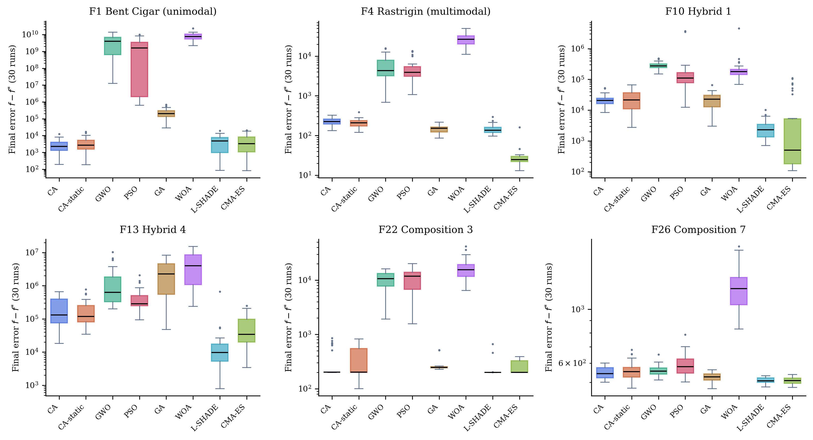
The distributions answer a question the means alone cannot, namely whether a ranking is carried by typical runs or by a few outliers, and the picture is not uniform. On F1 the distributions of CA, CA-static, L-SHADE and CMA-ES overlap almost entirely; CA holds the lowest mean of the roster on that function, and its comparisons against both competition-grade methods are statistical ties at \(p=0.21\) each. On F4, F10 and F13 the two specialized methods sit roughly an order of magnitude below CA, with tighter distributions, and beat it significantly. On the two composition functions the absolute gaps are small but consistent across runs, and CA loses to both methods there as well.
4.4 Discussion
The two competition-grade methods lead decisively. L-SHADE takes the best mean Friedman rank at \(1.76\) and CMA-ES the second at \(2.28\), each beating CA on roughly ninety percent of functions, \(26/29\) and \(20/29\) losses for CA respectively, with only \(1\) and \(6\) wins. We report this as the central result of the suite, not as a caveat to it, and Section 7.1 explains it mechanistically. Among the remaining six algorithms, CA takes the best mean Friedman rank at \(3.62\), narrowly ahead of CA-static at \(3.90\) and GA at \(4.14\), and well ahead of PSO at \(6.03\), GWO at \(6.41\), and WOA at \(7.86\). Against GWO, PSO, and WOA, CA wins nearly all comparisons, \(27/29\), \(22/29\), and \(29/29\) respectively, with a single loss to each of GWO and PSO, both on F5, the restored Schaffer F7 function, and none to WOA. Against its own non-adaptive ablation, the adaptive machinery of Section 2.6 wins \(5\) and loses \(1\) of \(29\), with \(23\) ties, which is a real but modest net gain, about what one should expect from a well-tuned control layer applied to an already competitive base algorithm.
The comparison least favourable to CA among the classical roster is against GA, where the near-tied mean rank conceals a record of \(10\) wins, \(9\) ties and \(10\) losses function by function. The ten losses are not scattered at random. They are F4, F5, F11, F12, F20, F22, F24, F25, F26, and F27, all Rastrigin-family, hybrid, and composition landscapes whose basins lie as far apart as the search domain is wide. The BLX-\(\alpha\) crossover of GA routinely proposes offspring outside the interval spanned by two parents, an operator that can relocate a candidate across the entire domain in a single step. Every CA operator introduced in Section 2.6, by contrast, is anchored to the King, to an elite peer, or to a bounded local neighbourhood, and even the Knight’s exploratory leap resamples only two of thirty coordinates. We read this as an illustration of the No-Free-Lunch theorem [17] rather than as a deficiency to be minimized: CA was tuned against constrained engineering geometry and smooth hybrid and composition exploitation (Section 2.6), and that specialization has a measurable opportunity cost on landscapes whose defining difficulty is long-range, unstructured basin-hopping. We return to the trade-off, and to a concrete proposal for closing it, in Section 10.
5 The CEC-2022 Benchmark Suite
CEC-2017 is the more extensive suite, but it is no longer the most recent, and a reviewer is entitled to ask whether the picture it paints survives on the current generation of benchmark design. CEC-2022 [32] comprises twelve functions, namely Zakharov, Rosenbrock, expanded Schaffer F7, non-continuous Rastrigin, and Lévy under shift and rotation, plus three hybrid functions and four composition functions, defined at two official dimensionalities, \(D=10\) and \(D=20\), both of which are evaluated here. The roster is the full eight-algorithm set of Section 4: CA, CA-static, GWO, PSO, GA, WOA, L-SHADE, and CMA-ES. The protocol is likewise identical, with population 30, 500 iterations, 30 independent runs, shared seed \(\text{SEED}_0+r\) at run index \(r\), and unit-hypercube search with bounds folded into the decoder. One departure from the official competition setup is disclosed rather than hidden. The CEC-2022 termination criteria specify budgets of \(200{,}000\) evaluations at \(D=10\) and \(1{,}000{,}000\) at \(D=20\), whereas this study retains its paper-wide core budget of \(15{,}000\) so that results remain comparable across every section. The findings below therefore characterize behaviour under a modest, practice-oriented budget rather than at the official competition horizon.
5.1 Data integrity
The same two-stage audit as Section 4.2 was applied to the CEC-2022 port of opfunu. Unlike the CEC-2017 port, the preflight check passes for all twelve functions at both dimensionalities. The post-hoc below-optimum audit, applied after the full runs with the same tolerance, nonetheless excluded six (function, dimension) cells in which at least one algorithm’s best run fell decisively below the library’s claimed optimum: F7 and F8 at \(D=20\), F10 at both dimensionalities, and F11 and F12 at \(D=10\), with observed dips ranging from \(-41\) to \(-4{,}588\). This is again an implementation defect rather than a property of any algorithm, since in the worst cases nearly every algorithm in the roster, including the weakest, crossed the claimed optimum. In addition, F3 (expanded Schaffer F7, the same function family whose near-flat CEC-2017 port motivated the flatness rule in Section 4.2) proved non-discriminative at both dimensionalities under this budget: the worst-performing algorithm’s median final error is \(0\) at \(D=10\) and \(0.066\) at \(D=20\), so every method essentially solves it and it contributes no ranking information. Table 18 summarizes the exclusions. Sixteen validated cells remain, eight per dimensionality, and the full pre-audit numbers are committed in the repository (results/cec2022_stats_raw_unaudited.csv).
| Function | Reason excluded |
|---|---|
| F10-D10 | below-optimum (opfunu defect) |
| F10-D20 | below-optimum (opfunu defect) |
| F11-D10 | below-optimum (opfunu defect) |
| F12-D10 | below-optimum (opfunu defect) |
| F7-D20 | below-optimum (opfunu defect) |
| F8-D20 | below-optimum (opfunu defect) |
| F3-D10 | near-flat (worst-mean PSO median final error 0 < 1.0) |
| F3-D20 | near-flat (worst-mean PSO median final error 0.0657 < 1.0) |
5.2 Results and discussion
Table 19 gives the standing of the roster across the sixteen validated cells, in the same layout as Table 11. The per-cell results follow in Table 20 and Table 21, one table per official dimensionality; best and worst runs are in Table 34, and the excluded cells remain listed with their reasons in Table 18.
| Algorithm | Mean Friedman rank | Rank | Best mean on | CA’s W / T / L against it |
|---|---|---|---|---|
| L-SHADE | 1.88 | 1 | 5 of 16 | 1 / 4 / 11 |
| CMA-ES | 2.06 | 2 | 10 of 16 | 2 / 2 / 12 |
| CA | 3.63 | 3 | 1 of 16 | – |
| CA-static | 3.75 | 4 | 0 of 16 | 1 / 13 / 2 |
| GA | 4.75 | 5 | 0 of 16 | 10 / 4 / 2 |
| PSO | 5.63 | 6 | 0 of 16 | 12 / 2 / 2 |
| GWO | 6.44 | 7 | 0 of 16 | 12 / 4 / 0 |
| WOA | 7.88 | 8 | 0 of 16 | 16 / 0 / 0 |
| Algorithm | F1 | F2 | F4 | F5 | F6 | F7 | F8 | F9 |
|---|---|---|---|---|---|---|---|---|
| CA | 1.39e-07 ±1.83e-07 | 14.36 ±25.33 | 20.36 ±7.008 | 0.0996 ±0.1728 | 6264 ±4765 | 20.06 ±5.306 | 21.15 ±5.843 | 183.8 ±183.8 |
| CA-static | 1.13e-07 ±4.52e-07 | 12.06 ±24.07 | 22.6 ±7.36 | 0.1964 ±0.2853 | 8690 ±7381 | 19.73 ±8.406 | 19.16 ±6.819 | 208.3 ±182.2 |
| GWO | 267.4 ±560.4 | 26 ±32.79 | 44.42 ±12.01 | 0.006198 ±0.02241 | 4.426e+04 ±1.849e+04 | 46.96 ±18.63 | 555.4 ±659.1 | 375.3 ±27.2 |
| PSO | 6.65e-10 ±1.01e-09 | 19.75 ±18.49 | 31.27 ±9.64 | 0.01195 ±0.03043 | 2.848e+04 ±1.561e+04 | 30.42 ±10.34 | 407.2 ±894.8 | 328.9 ±141.2 |
| GA | 0.003916 ±0.005432 | 10.57 ±18.76 | 45.8 ±19.66 | 0.7676 ±1.202 | 1.716e+04 ±1.334e+04 | 25.73 ±11.99 | 56.54 ±100.1 | 285.6 ±158.1 |
| WOA | 4044 ±3642 | 69.67 ±101 | 102.4 ±44.61 | 2.956 ±2.068 | 2.917e+04 ±1.893e+04 | 374.9 ±315 | 1924 ±1229 | 416.5 ±140.4 |
| L-SHADE | 2.46e-14 ±2.82e-14 | 6.451 ±2.465 | 18.47 ±6.212 | 0.002984 ±0.01607 | 36.77 ±186.8 | 12.16 ±9.212 | 18.93 ±5.97 | 275.3 ±151.9 |
| CMA-ES | 0 ±0 | 6.451 ±2.465 | 17.8 ±6.052 | 0 ±0 | 79.58 ±241.6 | 27.69 ±13.29 | 20.19 ±7.353 | 359.1 ±1.71e-13 |
| Algorithm | F1 | F2 | F4 | F5 | F6 | F9 | F11 | F12 |
|---|---|---|---|---|---|---|---|---|
| CA | 3.01e-04 ±2.13e-04 | 62.75 ±18.66 | 95.27 ±27.17 | 1.588 ±0.8434 | 3.971e+04 ±1.667e+04 | 355.6 ±13.06 | 4.998 ±9.974 | 257.5 ±24.44 |
| CA-static | 1.21e-05 ±2.36e-05 | 61.53 ±13.45 | 110.2 ±28.16 | 1.628 ±0.767 | 4.312e+04 ±1.52e+04 | 338.8 ±63.68 | 152.5 ±430.6 | 259.3 ±29.23 |
| GWO | 2182 ±2795 | 101.8 ±71.86 | 184.4 ±68.6 | 1.311 ±1.174 | 1.14e+06 ±3.61e+06 | 395.7 ±43 | 522.2 ±695.3 | 269.8 ±27.88 |
| PSO | 766.9 ±3526 | 73.02 ±33.93 | 129.1 ±39.35 | 1.719 ±1.852 | 5.21e+05 ±2.36e+06 | 438 ±167.7 | 356.1 ±558.8 | 295 ±44.46 |
| GA | 0.1164 ±0.04908 | 60.24 ±12.07 | 141.1 ±44.2 | 3.179 ±2.803 | 5.903e+04 ±2.376e+04 | 343.7 ±5.018 | 8.723 ±11.57 | 256.6 ±35.34 |
| WOA | 1.277e+04 ±1.202e+04 | 226.4 ±125.1 | 408.3 ±78.42 | 10.22 ±4.252 | 7.72e+05 ±3.23e+06 | 615.1 ±149.3 | 999.4 ±1076 | 720.3 ±207.5 |
| L-SHADE | 3.29e-11 ±1.07e-10 | 48.73 ±5.444 | 59.64 ±17.84 | 0.2258 ±0.2831 | 3.717e+04 ±1.617e+04 | 335.6 ±7.72e-05 | 49.69 ±246.6 | 233 ±8.669 |
| CMA-ES | 1.08e-12 ±4.33e-12 | 48.67 ±1.257 | 43.87 ±10.54 | 0.002984 ±0.01607 | 6.225e+04 ±1.933e+04 | 335.6 ±5.41e-12 | 1.75e-08 ±3.34e-08 | 239.2 ±16.99 |

Figure 11 shows median convergence on three representative cells per dimensionality: F1 (Zakharov), F6 (Hybrid 1) and F9 (Composition 1), which span the basic, hybrid and composition classes of the suite. They are not selected for CA’s advantage. On F9, CA holds the best mean at \(D=10\) and ties both competition-grade methods there, but loses to both significantly at \(D=20\).
The ordering at the top of Table 19 is unambiguous and consistent with Section 4: the two competition-grade methods lead, with L-SHADE at \(1.88\) and CMA-ES at \(2.06\), followed by CA at \(3.63\) and CA-static at \(3.75\) as the best-ranked of the remaining six, then GA at \(4.75\), PSO at \(5.63\), GWO at \(6.44\), and WOA at \(7.88\). The pattern is stable across dimensionalities. Restricting the Friedman analysis to the eight \(D=10\) cells gives L-SHADE first and CMA-ES second (\(\chi^2=39.3\), \(p=1.7\times10^{-6}\)), and restricting it to the eight \(D=20\) cells gives CMA-ES first and L-SHADE second (\(\chi^2=44.1\), \(p=2.0\times10^{-7}\)), with CA third at \(D=20\) and effectively tied with CA-static for third at \(D=10\).
The pairwise records make both directions of the comparison explicit. Against the classical roster, CA wins 12 of 16 cells against GWO and PSO, 10 against GA, and all 16 against WOA, with at most 2 losses to any of them. Against L-SHADE it loses 11 of 16 with a single win, F11, the second composition function, at \(D=20\); against CMA-ES it loses 12 with two wins, F7 at \(D=10\) and F6 at \(D=20\), both hybrid functions. These losses are the central fact of this section rather than a footnote to it: under this budget, the specialized adaptive machinery of L-SHADE and CMA-ES is decisively stronger on shifted and rotated synthetic landscapes than CA’s chess-derived composition, at both dimensionalities. The No-Free-Lunch reading of such reversals, developed for the GA trade-off in Section 4, applies here in the same form and is not repeated. What is specific to this suite is that the GA trade-off itself does not reappear: CA beats GA 10-4-2 on CEC-2022, against a losing record on CEC-2017, which indicates that GA’s long-range crossover advantage belongs to the 30-dimensional CEC-2017 hybrid and composition geometry rather than being a general property. Section 7.1 accounts for why the two specialized methods lead, which is more useful than the observation on its own.
6 Constrained Engineering Design Benchmarks
Alongside standardized synthetic suites, it is common practice in this literature to validate a new metaheuristic on the small set of constrained engineering design problems that recur across published comparisons, because a shared, literature-anchored problem allows direct comparison against independently produced results. We use seven such problems in their commonly published formulations: welded beam design, tension/compression spring design, pressure vessel design, speed reducer design, three-bar truss design, gear train design, and cantilever beam design. Constraints are handled by the same static-penalty approach used elsewhere in this paper (Section 9), \(f_{\text{pen}}(\mathbf{x}) = f(\mathbf{x}) + 10^{6}\sum_i \max(0, g_i(\mathbf{x}))^2\). Roster and protocol are identical to Section 4, with all eight algorithms, population 30, 500 iterations and 30 runs.
6.1 Results and discussion
Table 22 gives the standing of the roster across the seven problems and Table 23 the per-problem results, with the algorithms as rows and the design problems as columns; best and worst runs are in Table 35. Figure 12 shows median convergence on all seven.
| Algorithm | Mean Friedman rank | Rank | Best mean on | CA’s W / T / L against it |
|---|---|---|---|---|
| L-SHADE | 1.57 | 1 | 4 of 7 | 0 / 0 / 7 |
| CMA-ES | 2.14 | 2 | 2 of 7 | 0 / 1 / 6 |
| CA | 3.71 | 3 | 1 of 7 | – |
| CA-static | 4.14 | 4 | 0 of 7 | 1 / 6 / 0 |
| GWO | 5.00 | 5 | 0 of 7 | 3 / 4 / 0 |
| PSO | 5.71 | 6 | 0 of 7 | 4 / 2 / 1 |
| GA | 6.14 | 7 | 0 of 7 | 6 / 1 / 0 |
| WOA | 7.57 | 8 | 0 of 7 | 7 / 0 / 0 |
| Algorithm | Welded beam | Spring | Pressure vessel | Speed reducer | Three-bar truss | Gear train | Cantilever beam |
|---|---|---|---|---|---|---|---|
| CA | 1.774 ±0.1085 | 0.01293 ±3.19e-04 | 5969 ±236.1 | 2994 ±1.01e-12 | 263.9 ±1.18e-11 | 7.30e-10 ±1.07e-09 | 1.34 ±4.01e-05 |
| CA-static | 1.778 ±0.1323 | 0.01305 ±8.56e-04 | 5959 ±230.6 | 2994 ±4.79e-09 | 263.9 ±1.20e-11 | 8.08e-10 ±1.11e-09 | 1.34 ±1.99e-05 |
| GWO | 1.728 ±0.001381 | 0.01281 ±1.67e-04 | 5887 ±191.1 | 3000 ±3.543 | 263.9 ±0.004537 | 8.50e-10 ±8.07e-10 | 1.34 ±8.75e-05 |
| PSO | 1.725 ±0.001027 | 0.01307 ±9.30e-04 | 6076 ±297.9 | 3032 ±34.64 | 263.9 ±6.86e-06 | 3.17e-09 ±5.92e-09 | 1.34 ±4.31e-05 |
| GA | 1.803 ±0.09243 | 0.01378 ±0.001224 | 6408 ±386.3 | 2994 ±1.32e-07 | 263.9 ±0.001248 | 7.92e-10 ±9.93e-10 | 1.342 ±0.001269 |
| WOA | 172.6 ±910.3 | 0.01362 ±8.43e-04 | 1.621e+04 ±1.109e+04 | 2994 ±1.129 | 266.8 ±3.698 | 2.25e-08 ±5.77e-08 | 3.372 ±1.118 |
| L-SHADE | 1.725 ±7.00e-16 | 0.01267 ±2.38e-05 | 5798 ±31.37 | 2994 ±6.27e-13 | 263.9 ±5.68e-14 | 5.82e-11 ±1.65e-10 | 1.34 ±0 |
| CMA-ES | 1.725 ±2.02e-15 | 0.01267 ±8.98e-06 | 5788 ±0.1058 | 2994 ±4.55e-13 | 263.9 ±5.96e-14 | 9.38e-10 ±1.39e-09 | 1.34 ±0 |

The two competition-grade methods lead this suite as they do the synthetic ones. L-SHADE takes the best mean Friedman rank at \(1.57\), beating CA significantly on all seven problems, and CMA-ES is second at \(2.14\), beating CA on six with one statistical tie on the gear train, where CA’s mean is in fact fractionally lower. The terminal precision these two reach is instructive. L-SHADE attains the welded-beam literature optimum of \(1.72485\) with a run-to-run standard deviation below \(10^{-15}\), and reproduces the best-known speed-reducer, three-bar-truss and cantilever-beam values with essentially zero variance across all thirty runs. On this problem class, success-history parameter adaptation behaves as a reliable constrained refinement engine, and that level of terminal accuracy is one CA’s fixed-rate probes do not reach. On the pressure vessel, both methods also descend below the literature reference value, which is admissible: the commonly cited \(5{,}885.33\) applies to the mixed-integer formulation in which two thicknesses are multiples of \(0.0625\) in, whereas the continuous relaxation solved here, by every algorithm in the roster identically, admits lower objectives.
Among the remaining six algorithms, CA is the best ranked at \(3.71\), ahead of CA-static at \(4.14\), GWO at \(5.00\), PSO at \(5.71\), GA at \(6.14\), and WOA at \(7.57\). Against that classical roster CA loses exactly once across \(35\) pairwise comparisons, to PSO on the welded-beam problem, where PSO’s near-zero run-to-run variance around the known optimum, \(1.7251 \pm 0.0010\), is difficult for any method that retains meaningful exploration to match on a low-dimensional, well-conditioned landscape. One further observation deserves note. WOA under the default hyperparameters of mealpy is dramatically unstable on several of these constrained problems: its mean objective on welded beam is \(172.6\), two orders of magnitude above the optimum of \(1.725\), driven by a small number of catastrophically infeasible runs (top-left panel of Figure 12). Default hyperparameters tuned for unconstrained synthetic benchmarks do not automatically transfer to constrained, penalty-shaped landscapes.
7 Component, Parameter, and Cost Analysis
The preceding sections treat CA as a unit. This one takes it apart and asks which of its mechanisms carry the performance (Section 7.1), how sensitive that performance is to the parameter configuration of Table 3 (Section 7.2), and what the algorithm actually costs in evaluations and wall-clock time (Section 7.3). An algorithm with twelve named mechanisms invites the objection that most of them are ornamental. The measurements below answer that objection directly, and several of the answers are unflattering to individual components, which is what makes the remaining ones worth believing.
7.1 Granular ablation
Each of the twelve strategic mechanisms of Section 2 is disabled one at a time, with all other mechanisms held at their published defaults, and each single-mechanism-off variant is compared against full CA over 30 runs on six problems spanning the paper: CEC-2017 F1 (Bent Cigar), F4 (Rastrigin), F13 (Hybrid 4), and F22 (Composition 3) at \(D=30\) under the suite protocol and seeds of Section 4, the welded-beam problem under the protocol of Section 6, and the berth allocation problem P2 under the protocol of Section 9. Table 24 reports, for each mechanism, the ratio of the ablated variant’s mean final error to full CA’s, averaged over the six problems, together with the number of problems on which the difference is statistically significant. The per-problem breakdown is Table 36.
| Mechanism disabled | Mean error ratio (ablated / full CA) | Significant on (of 6 problems) |
|---|---|---|
| En passant (success-rule local capture) | 603.3 | 5 |
| Knight’s fork | 46.842 | 5 |
| Threefold repetition | 1.213 | 3 |
| Sacrifice | 1.070 | 0 |
| Pinning | 1.050 | 0 |
| Windmill | 1.043 | 0 |
| Opposition-based initialization | 1.030 | 1 |
| Discovered attack | 1.024 | 0 |
| Blockade response | 1.006 | 0 |
| Novotny interference | 0.999 | 0 |
| Castling | 0.999 | 0 |
| Royal council | 0.990 | 3 |
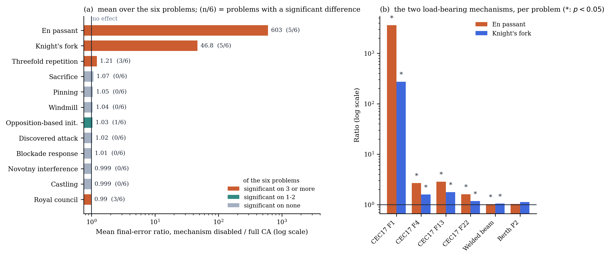
Two mechanisms carry most of the load, and they are not of equal kind. Disabling the en-passant capture, the success-rule local refinement of Equation 12, degrades the mean error by a factor of roughly \(600\) averaged over the six problems, dominated by a factor of \(3.6\times10^{3}\) on Bent Cigar, and the degradation is significant on five of six problems including the welded beam (\(+1.9\%\), \(p=0.003\)). CA’s terminal accuracy on smooth or locally smooth landscapes rests essentially on this one mechanism. Disabling the knight’s fork, the differential move of Equation 20, costs a factor of \(47\) on the same average and a factor of \(274\) on Bent Cigar, significant on the same five problems; the fork is CA’s principal rotation-invariant recombination device.
The remaining ten mechanisms measure small individually. Threefold repetition averages a ratio of \(1.21\), significant on three problems but with mixed sign, protective on Bent Cigar and Rastrigin and marginally harmful on the composition function. The royal council is significantly helpful only on the welded beam, where removing it costs \(2.9\%\), while being significantly harmful to retain on two synthetic functions, which is consistent with its design purpose, the constraint-valley geometry of Equation 22, and suggests constraint-conditional gating as a refinement. The other eight (sacrifice, pinning, windmill, opposition initialization, discovered attack, blockade, interference, castling) sit between \(0.99\) and \(1.07\) with at most one significant problem each. One caveat applies to all these small ratios: a one-at-a-time ablation measures each mechanism’s marginal contribution in the presence of all the others, so mechanisms with overlapping function can each look dispensable even when they are not collectively so. The CA-static configuration, which disables the adaptive gating of every mechanism at once and is carried through every experiment in this paper, supplies the complementary joint measurement.
Beyond the numbers themselves, the identity of the two load-bearing mechanisms is the most consequential finding in this evaluation, because it ties Table 4 to the benchmark tables. En passant belongs to the success-rule step-size family of Evolution Strategies; the fork belongs to the differential-mutation family of Differential Evolution. The two algorithms that dominate every comparison in Section 4, Section 5, and Section 6, CMA-ES and L-SHADE, are precisely the competition-refined members of those same two families, equipped with full adaptive machinery, covariance adaptation in one case and success-history adaptation with population reduction in the other, where CA fires fixed-rate, fixed-shape versions embedded in its role architecture. The expectation formulated at the end of Section 2.8 is therefore confirmed, not just illustrated. CA’s measured performance rests chiefly on its ES-like and DE-like components, and the specialized algorithms built purely on those components, with adaptation in place of fixed rates, outperform the composition that borrows them. This is at once an honest account of why CA does not beat the modern state of the art and a mechanism-level demonstration that the architecture’s active ingredients are real, identifiable, and correctly attributed.
7.2 Parameter sensitivity
A one-at-a-time sensitivity analysis perturbs each parameter group of Table 3 around the published default configuration, with role fractions bracketed low and high, \(\theta_0 \in \{0.05, 0.2\}\), castling period \(c \in \{5, 20\}\), blockade threshold in \(\{15, 40\}\), and pinning cap in \(\{0.15, 0.50\}\), on the same six problems and run protocol as Section 7.1. Table 25 reports each variant’s mean-error ratio relative to the default configuration, and Figure 14 shows the same quantity with its per-problem range. The phase thresholds \(\delta_{\text{open}}\) and \(\delta_{\text{end}}\) of Equation 17 are not re-swept here; the four-combination check reported in Section 2.6 stands.
| Parameter variant | Mean error ratio (variant / default) | \(>20\%\) deviation on (of 6) | Significant on (of 6) |
|---|---|---|---|
| Role fractions (.15/.20/.20/.25) | 0.886 | 2 | 3 |
| \(\theta_0 = 0.2\) | 0.966 | 1 | 0 |
| Castling period \(c = 20\) | 0.978 | 2 | 0 |
| Blockade threshold \(= 15\) | 0.979 | 0 | 0 |
| \(\theta_0 = 0.05\) | 0.992 | 1 | 0 |
| Pin cap \(= 0.15\) | 0.993 | 0 | 0 |
| Blockade threshold \(= 40\) | 1.004 | 0 | 0 |
| Pin cap \(= 0.50\) | 1.007 | 0 | 0 |
| Castling period \(c = 5\) | 1.085 | 1 | 0 |
| Role fractions (.05/.10/.10/.15) | 13.410 | 3 | 5 |
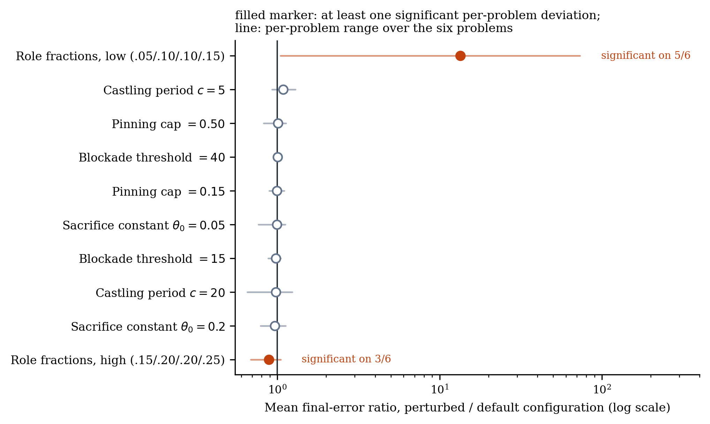
The pattern is sharp. Of sixty tested (variant, problem) cells, all eight statistically significant deviations belong to the role-fraction rows, and no other parameter produces a significant change on any problem, with mean ratios within ten percent of unity throughout. At the granularity tested, CA is robust to its sacrifice constant, castling period, blockade threshold, and pinning cap, so a practitioner does not need to tune them, while the division of the population among piece roles is the one structural choice that matters. Its direction is informative in both senses. Shrinking the elite roles, which means more pawns, is harmful, catastrophically so on Bent Cigar with a factor of \(73\), where the elite ranks supply nearly all the useful moves. Enlarging them is beneficial on several problems, with a mean ratio of \(0.89\) and a significant improvement on three. The published default of Table 3, fixed in advance and used unchanged for every result in this paper, is therefore demonstrably not optimal everywhere. We report that headroom rather than exploit it: no result elsewhere in the paper uses the improved fractions.
Because the design is one-at-a-time, these are local sensitivities around a single configuration and not a global sensitivity analysis, so interactions between parameters remain unmeasured.
7.3 Computational cost
Cost here is measured rather than estimated. An exact counting wrapper intercepts every objective call, and wall-clock time is taken with a monotonic timer over ten runs per cell on an otherwise idle machine, for all eight algorithms on six problems spanning the paper: CEC-2017 F1, F13 and F22 at \(D=30\), CEC-2022 F8 at \(D=20\), the welded beam, and signal timing P1 at its own \(T=300\) protocol. Table 26 reports mean seconds per run for each algorithm on each problem, together with the mean ratio of evaluations consumed to the \(N \times T\) core budget and the mean time relative to GA. The per-problem evaluation counts behind those two averages are in Table 37.
| Algorithm | CEC17 F1 | CEC17 F13 | CEC17 F22 | CEC22 F8 (D20) | Welded beam | Signal P1 | Evals / core budget | Time vs GA |
|---|---|---|---|---|---|---|---|---|
| CA | 0.31 | 0.88 | 1.70 | 11.64 | 0.30 | 0.63 | 1.124 | 1.95 |
| CA-static | 0.31 | 0.82 | 1.85 | 11.79 | 0.30 | 0.58 | 1.116 | 1.91 |
| GWO | 0.09 | 0.54 | 1.35 | 12.05 | 0.05 | 0.19 | 1.002 | 0.83 |
| PSO | 0.08 | 0.53 | 1.41 | 10.02 | 0.04 | 0.19 | 1.002 | 0.76 |
| GA | 0.14 | 0.62 | 1.43 | 10.39 | 0.10 | 0.23 | 1.002 | 1.00 |
| WOA | 0.56 | 1.17 | 1.94 | 10.96 | 1.39 | 5.80 | 1.002 | 7.92 |
| L-SHADE | 1.61 | 2.08 | 3.05 | 11.55 | 1.75 | 6.71 | 1.037 | 10.81 |
| CMA-ES | 1.06 | 1.72 | 2.35 | 10.56 | 0.39 | 0.75 | 0.933 | 3.36 |
Three facts summarize the table. The first is CA’s evaluation overhead, that is the en-passant probes, castling probes, windmill extensions and blockade responses documented throughout Section 2, which measures \(12.4\%\) over the core budget on average, ranging from \(11.4\) to \(13.4\%\) across the six problems, with CA-static at \(11.6\%\). That measured figure replaces the “ten to fifteen percent” estimate quoted in earlier drafts. The second is that the budget asymmetry runs against the two strongest competitors: L-SHADE is capped at \(3.3\%\) over core, and CMA-ES consumes at most exactly the core budget, stopping at sixty percent of it on the welded beam once its stagnation tests reach the numerical-precision floor. The results of Section 4 through Section 6 therefore cannot be attributed to an evaluation-budget advantage held by the winners; the only algorithm holding such an advantage in those tables is CA itself, and it is disclosed and measured. The third concerns wall-clock time, which depends on what dominates the run. On the cheapest objective CA costs about \(2.2\times\) GA’s time per run, reflecting the per-iteration bookkeeping of the control layer, whereas on the most expensive objective tested, CEC-2022 F8 at \(D=20\), where a single evaluation costs roughly forty times more than on Bent Cigar, all eight algorithms fall within about fifteen percent of one another. For expensive objectives, which are the practically interesting case, the choice among these algorithms is a choice about evaluations, not about control-layer arithmetic.
7.4 Where CA stands
The three suites of Section 4, Section 5, and Section 6 were run under one roster and one protocol, so their Friedman ranks can be read side by side. Figure 15 does that, and it is the compact form of this paper’s central empirical claim. The ordering is the same on all three suites and admits no qualification: L-SHADE and CMA-ES lead, CA follows as the best of the remaining six, and CA-static sits just behind it. CA’s position is therefore neither a sweep nor a failure, and the ablation of Section 7.1 explains why it is where it is, since CA’s two load-bearing operators are fixed-rate members of exactly the two families those two methods specialize in and adapt fully.
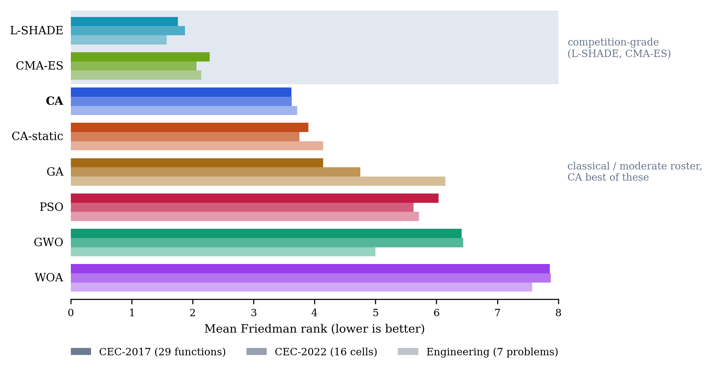
Two qualifications belong with the figure. It compares mean ranks, which compress the per-function records of Table 11, Table 19, and Table 22, so that CA’s ten losses to GA on CEC-2017 are invisible in a mean rank that GA nonetheless trails. And a rank is relative to the roster: adding or removing an algorithm changes every rank in the figure, which is why the pairwise Wilcoxon records are reported alongside it throughout the paper rather than in place of it. The classical six-function suite of Section 3 is absent from the figure because it was run under a different roster, including SA and excluding WOA, L-SHADE, and CMA-ES.
8 Transportation Application: Arterial Signal Coordination
8.1 Problem statement and model
Coordinated fixed-time signal timing along an urban arterial is a classic of transportation network optimization, and a deceptive one. The objective surface is multimodal, because different offset combinations produce different locally good green waves. The variables are of mixed kinds: a common cycle, per-intersection splits and offsets. The delay model is nonlinear and, in practice, non-differentiable [1], [33]. It is therefore a natural first engineering test for CA.
Our test bed is an eight-intersection arterial with spacings of \(450, 380, 520, 300, 610, 420,\) and \(350\) m, a progression speed of \(50\) km/h, near-saturation two-way traffic with eastbound approach demands between roughly \(1{,}240\) and \(1{,}400\) veh/h, and conflicting cross-street demands at every junction (Figure 16). Each intersection runs a two-phase plan.

The decision vector is
\[ \mathbf{z} = \big(C,\ g_1, \dots, g_8,\ o_2, \dots, o_8\big) \in \mathbb{R}^{16}, \tag{28}\]
with a common cycle length \(C \in [60, 140]\) s, arterial green splits \(g_i \in [0.30, 0.75]\), and offsets \(o_i\) expressed as fractions of the cycle, intersection 1 serving as reference. Figure 17 shows which physical object each of the sixteen variables controls. Panel (a) locates the variables on the arterial; panel (b) shows how the offsets displace each local green window in time, so that a platoon leaving one window arrives at the next either inside its green or after it. Because the arterial carries platoons in both directions, offsets that perfect one direction damage the other, and that is where the multimodality of coordination problems comes from. The objective is total network delay in veh·h/h, built from three ingredients.
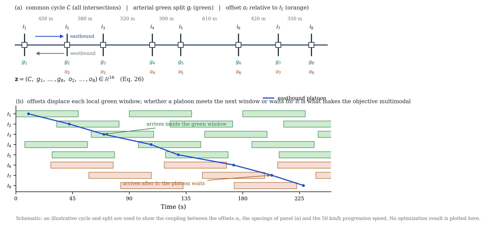
The first is uniform delay per approach, Webster’s first term [34]:
\[ d_1 = \frac{C\,(1 - g)^2}{2\,\big(1 - \min(1, x)\, g\big)}, \tag{29}\]
where \(g\) is the effective green ratio and \(x = v/c\) the volume-to-capacity ratio. The second is overflow delay from the HCM time-dependent formulation [33]:
\[ d_2 = 900\,T_a \left[ (x - 1) + \sqrt{(x-1)^2 + \frac{8\,k\,I\,x}{c\,T_a}} \right], \tag{30}\]
with analysis period \(T_a = 0.25\) h, incremental delay factor \(k = 0.5\), and upstream filtering factor \(I = 1\). The third is a progression adjustment: platoons arriving from upstream are shifted by the offset difference minus the travel time, and the mismatch between platoon arrival and the local green window scales the uniform delay up or down, per direction.
Cross-street phases receive \(1 - g_i\), less \(4\) s lost time per phase, and contribute their own delay, so greedy arterial splits are punished through cross-street oversaturation. All terms are summed over the sixteen arterial approaches and the eight cross-street approaches.
8.2 Results
CA, CA-static (Section 2.6), GA, PSO, and GWO run with \(N = 30\), \(T = 300\) iterations, that is \(9{,}000\) core evaluations, and \(30\) independent runs each, again without tuning. These are the three strongest baselines of Section 3 together with CA and its ablation; SA is dropped here given its uncompetitive showing in Section 3. Table 27 summarizes the final delays together with the pairwise tests, and Figure 18 and Figure 19 show the convergence behaviour and the spread across runs.
| Algorithm | Mean delay ± std (veh·h/h) | Best | Worst | \(p\) vs CA | Outcome |
|---|---|---|---|---|---|
| CA | 169.963 ±4.87131 | 166.525 | 179.149 | – | – |
| CA-static | 170.827 ±5.07249 | 166.525 | 178.533 | 6.249e-02 | not significant |
| GWO | 170.506 ±2.81774 | 166.739 | 177.987 | 1.471e-02 | CA better |
| PSO | 169.491 ±3.66617 | 166.526 | 179.946 | 3.089e-02 | CA worse |
| GA | 171.16 ±4.89468 | 166.526 | 178.47 | 2.002e-03 | CA better |


All five configurations land within about one percent of each other in mean delay, between \(169.5\) and \(171.2\) veh·h/h, yet at this scale most of the differences are still resolvable. CA is significantly better than GA (\(p=0.002\)) and GWO (\(p=0.015\)), statistically tied with its own ablation CA-static (\(p=0.062\)), and significantly worse than PSO (\(p=0.031\)), whose mean delay of \(169.491\) is the lowest in the table. That last comparison is the one result of this section unfavourable to CA, and we report it as such.
On the best-solution metric the ranking reverses. CA and CA-static both reach \(166.5254\) veh·h/h, the lowest value found by any method, fractionally ahead of the best runs of GA and PSO at \(166.526\) and clearly ahead of GWO’s \(166.739\). CA’s operators are therefore fully capable of locating the same high-quality coordination plan as the strongest baselines, even where its mean is higher than PSO’s.
The most instructive pattern, though, is that the classical-suite ranking of Section 3 does not carry over here at all. GWO, which dominated that suite, is the worst mean performer of the five on this problem. This is a clean within-paper illustration of the No-Free-Lunch theorem [17], and it is the reason we resist describing any of these results as a sweep.
The best plan discovered, found by CA, selects the minimum cycle \(C = 60\) s, which is a sensible choice under Webster’s guidance whenever splits can be kept efficient, with the timings of Table 28 drawn as a time-space diagram in Figure 20.
| Parameter | Value |
|---|---|
| Cycle length C | 60.0 s |
| Arterial green split g1 | 0.633 (38.0 s) |
| Arterial green split g2 | 0.529 (31.7 s) |
| Arterial green split g3 | 0.667 (40.0 s) |
| Arterial green split g4 | 0.498 (29.9 s) |
| Arterial green split g5 | 0.624 (37.4 s) |
| Arterial green split g6 | 0.540 (32.4 s) |
| Arterial green split g7 | 0.678 (40.7 s) |
| Arterial green split g8 | 0.493 (29.6 s) |
| Offset o2 | 32.4 s |
| Offset o3 | 59.8 s |
| Offset o4 | 37.2 s |
| Offset o5 | 58.8 s |
| Offset o6 | 42.7 s |
| Offset o7 | 13.0 s |
| Offset o8 | 38.2 s |
| Total delay | 166.525 veh·h/h |

The offsets form a coherent progression pattern in which consecutive intersections alternate between favouring the eastbound and the westbound platoon, which is the compromise structure one expects on a heavily loaded two-way arterial.
8.3 Practical remarks
For a transportation agency, the practical implication is that CA can be applied to signal-coordination studies with the same confidence as GA, PSO, or GWO, and that it offers two features of practical relevance. The sacrifice mechanism gives a principled way of escaping a poor offset basin without restarting the search, and the en-passant refinement improves the precision of splits and offsets late in the run without a separate local-search stage. Extension to cycle-by-cycle stochastic simulation objectives, with VISSIM or SUMO in the loop, is straightforward, since CA requires only function values. The comparison against PSO deserves explicit attention: on this particular sixteen-variable periodic-offset landscape, the velocity-based search of PSO holds a genuine if small advantage in mean delay, and an agency choosing between the two on this problem class alone should not assume that CA will win by default. The case for CA rests on the broader evidence of Section 4 and Section 6 rather than on this single instance.
9 Extended Comparison on Independent Implementations
Every baseline in Section 3 and Section 8 was implemented by the present authors, in the same code style and the same array-vectorized idiom as CA itself. That is ordinary practice, but it leaves open the question of whether CA stays competitive against code written by somebody else. We therefore repeat the transportation comparison using mealpy [35], a large and actively maintained third-party Python library that ships several hundred metaheuristic variants behind a common solve(problem, seed=...) interface. Six well-known algorithms were run exactly as mealpy ships them, with default hyperparameters and no modification, on two transportation problems, the second of which has a global optimum known in closed form.
The six competitors are the Whale Optimization Algorithm (WOA) [14], the Sine Cosine Algorithm (SCA) [15], the Ant Lion Optimizer (ALO) [12], Moth-Flame Optimization (MFO) [36], Harris Hawks Optimization (HHO) [37], and Differential Evolution (DE) [9]. The two competition-grade baselines of Section 4, L-SHADE via niapy [29] and CMA-ES via pycma [30], are carried into both problems as well, so the transportation instances face the same strongest competitors as the synthetic suites. All methods search the identical unit hypercube, with problem-specific bounds folded into the decoding step rather than passed to the optimizers, so no algorithm gets an easier space than another. Every algorithm runs with population 30 for 300 iterations across 30 independent runs, run \(r\) of every algorithm seeded identically at \(\text{SEED}_0 + r\); the evaluation-budget accounting of Section 7.3 applies here in the same proportions, with 9,000 core evaluations and L-SHADE capped at 9,500.
9.1 Problem P1: the arterial signal timing instance
This is the same sixteen-variable coordination problem as in Section 8. Table 29 reports the summary statistics and the left panel of Figure 21 the median convergence.
| Algorithm | Mean | Std | Best | Worst | p-value (vs CA) | Result (\(\alpha = 0.05\)) |
|---|---|---|---|---|---|---|
| CA | 169.963 | 4.871 | 166.525 | 179.149 | — | — |
| WOA | 199.357 | 21.475 | 172.715 | 281.873 | 7.762e-11 | CA better |
| SCA | 174.006 | 2.307 | 171.044 | 180.683 | 2.962e-03 | CA better |
| ALO | 173.684 | 5.201 | 167.413 | 187.575 | 1.086e-03 | CA better |
| MFO | 179.765 | 5.849 | 169.539 | 189.142 | 1.306e-07 | CA better |
| HHO | 192.375 | 18.304 | 173.106 | 260.020 | 5.317e-10 | CA better |
| DE | 196.222 | 11.382 | 173.619 | 222.264 | 9.445e-11 | CA better |
| L-SHADE | 167.802 | 3.191 | 166.525 | 176.446 | 3.093e-04 | CA worse |
| CMA-ES | 167.151 | 1.868 | 166.525 | 176.446 | 1.054e-02 | CA worse |
CA is significantly better than every one of the six mealpy competitors, including SCA and ALO, its closest rivals in that group, at \(p = 0.003\) and \(p = 0.001\) respectively. WOA, HHO, and DE perform substantially worse and vary far more from run to run, with standard deviations of 11 to 21 veh·h/h against 4.9 for CA, which suggests that they find it harder than CA does to re-locate a good coordination plan reliably in the sixteen-dimensional periodic offset space. The two competition-grade baselines invert the comparison, as they do everywhere in this paper: L-SHADE at \(167.80\) and CMA-ES at \(167.15\) both hold significantly better mean delays than CA at \(169.96\), by margins of 1.3 to 1.7 percent, and all three methods reach the same best-of-thirty plan at \(166.525\) veh·h/h. The scope of this result is worth stating precisely. GA and PSO, our own implementations from Section 8, perform comparably to CA on this problem (Table 27), so the conclusion is not that CA is uniquely strong on signal timing, but that its standing among widely used algorithms survives a change of author, while the specialized adaptive methods keep a small and statistically resolvable advantage in mean delay.
9.2 Problem P2: continuous berth allocation with a known optimum
Independent implementations address one concern; a problem with a known optimal value addresses another, namely whether an algorithm’s apparent superiority is an artifact of comparing relative suboptimality on a problem that none of the competitors can solve. We borrow Example 1.9 of Teodorović and Janić [38]: fifteen ships of known length, arrival time, and required service time must be assigned mooring times and berth positions along a continuous 1,000 m quay within a 1,920-minute horizon, so as to minimize total time spent in port. With unit weights, the mixed-integer formulation in the source has a trivial global optimum, since every ship can moor the instant it arrives and wait for nothing:
\[ F^{*} = \sum_{i=1}^{15} p_i = 4{,}860 \text{ min}. \]
Reaching that bound requires the ship-pair schedule to be conflict-free along the time axis and the quay-position axis at once, which is a combinatorial matching problem embedded in a continuous one, and that is what makes the instance a substantive test for a population-based search. We encode each ship’s mooring time \(u_i \in [a_i,\ T - p_i]\) and berth position \(v_i \in [0,\ S - s_i]\) as decision variables and penalize, rather than hard-constrain, the pairwise rectangle overlap in the time-space diagram, so that the search can pass through momentarily infeasible plans on its way to a good one. This is the same soft-constraint treatment already used for cross-street oversaturation in Section 8.
| Algorithm | Mean | Std | Best | Worst | p-value (vs CA) | Result (\(\alpha = 0.05\)) |
|---|---|---|---|---|---|---|
| CA | 7934.2 | 973.8 | 6277.9 | 10257.8 | — | — |
| WOA | 45507.4 | 21345.8 | 9388.5 | 93564.7 | 3.879e-11 | CA better |
| SCA | 34567.6 | 9683.6 | 19217.2 | 57890.7 | 2.872e-11 | CA better |
| ALO | 9912.0 | 3544.1 | 7345.0 | 27033.0 | 2.320e-04 | CA better |
| MFO | 21914.8 | 12102.4 | 9112.4 | 52125.0 | 4.734e-11 | CA better |
| HHO | 48415.6 | 25410.2 | 12102.0 | 133361.1 | 2.872e-11 | CA better |
| DE | 25765.7 | 12631.0 | 9768.9 | 54967.4 | 3.879e-11 | CA better |
| L-SHADE | 6269.1 | 688.6 | 5283.7 | 8712.7 | 1.256e-08 | CA worse |
| CMA-ES | 6521.8 | 537.5 | 5424.7 | 7620.9 | 1.204e-07 | CA worse |
Table 30 reports the results. Against the mealpy group CA’s advantage grows considerably on this problem: its mean objective is roughly a sixth of WOA’s or HHO’s, and it is significantly better than all six, ALO included at \(p = 2.3\times10^{-4}\), which is otherwise its nearest rival in that group by a wide margin. The right panel of Figure 21 shows why. Among the seven methods plotted, CA and ALO are the only two that keep making progress past iteration 50, while WOA, SCA, MFO, HHO, and DE largely plateau within the first fifty. The two competition-grade baselines again lead: the means of L-SHADE at \(6{,}269\) and CMA-ES at \(6{,}522\) are both significantly better than CA’s \(7{,}934\), this time by the widest relative margins observed anywhere in this paper outside the synthetic suites, 18 to 21 percent in mean objective.

The distance of even the best runs from \(F^{*} = 4{,}860\) should be stated explicitly. Table 31 gives the optimality gap of each algorithm’s best run together with the residual overlap of its decoded plan.
| Algorithm | Best objective (min) | Gap to optimum | Overlap of best plan (min·m) |
|---|---|---|---|
| CA | 6277.9 | 29.17% | 0.0 |
| WOA | 9388.5 | 93.18% | 878.9 |
| SCA | 19217.2 | 295.42% | 11752.0 |
| ALO | 7345.0 | 51.13% | 0.0 |
| MFO | 9112.4 | 87.50% | 1873.6 |
| HHO | 12102.0 | 149.01% | 1963.4 |
| DE | 9768.9 | 101.01% | 0.0 |
| L-SHADE | 5283.7 | 8.72% | 0.5 |
| CMA-ES | 5424.7 | 11.62% | 0.0 |
CA’s best run sits 29% above the true optimum, which is a substantial gap and we state it without obfuscation. Three aspects of the table deserve separate comment. The smallest gaps belong to the competition-grade methods: L-SHADE reaches 8.7%, with a numerically negligible residual overlap of \(0.5\) min·m in its best plan, and CMA-ES 11.6% on a fully feasible plan. These are the closest any general-purpose method in this study comes to the combinatorial optimum, and they show that the instance rewards stronger adaptive machinery rather than being uniformly hard. Among the seven remaining methods, CA’s gap is the smallest by a considerable margin, 22 to 266 percentage points closer to \(F^{*}\) than the six mealpy competitors and 22 points ahead of ALO, its nearest rival there. The overlap column shows that CA’s best plan is fully feasible, so ships do not actually collide in the time-space diagram, which is not true of WOA, SCA, MFO, or HHO, whose reported objectives still carry unresolved penalty mass; ALO and DE also land on feasible plans, but at much larger gaps. Figure 22 shows CA’s best schedule. Every ship occupies its own rectangle with no overlap, but several ships wait appreciably longer than their arrival time, and that waiting time is the whole of the remaining 29% gap.

Two conclusions follow, and they mirror the rest of the paper. Among the seven widely used general-purpose metaheuristics run with default settings, CA reaches the best and most consistently feasible solutions on both transportation instances. L-SHADE and CMA-ES outperform CA on both, narrowly on signal timing and decisively on berth allocation. What this section does not show is that CA is close to solving berth allocation to global optimality; a 29% gap remains, against 9 to 12% for the two specialized methods, and the problem plainly deserves algorithms tuned to its combinatorial structure rather than any general-purpose search evaluated here.
10 Conclusion
This paper proposed the Chess Algorithm, a population-based metaheuristic built around a deliberately heterogeneous population. Agents are ranked at every iteration and play as Queens, Rooks, Bishops, Knights and Pawns around an elite King, each role moving under its own geometry, while strategic mechanisms taken from chess theory (development, sacrifice, pinning, castling, en passant and threefold repetition) govern the search throughout. A lightweight state machine reads the divergence, initiative and local-search success of the population at each iteration and decides which of a richer tactical set applies at that moment. Every mechanism is specified mathematically in Section 2, and Table 4 names the established operator family to which each belongs, so that the chess vocabulary describes the composition without standing in for it. A non-adaptive configuration, CA-static, was carried through every experiment as a control.
The experimental picture is consistent across five problem families. On six classical 30-dimensional functions, CA is significantly better than PSO and SA on all of them and better than GA on five of six, while GWO keeps its established advantage on that suite. On the 29 validated CEC-2017 functions, on the 16 validated CEC-2022 cells and on seven constrained engineering design problems, CA obtains the best mean Friedman rank among the classical and widely used baselines, losing one comparison in 29 to each of GWO and PSO on CEC-2017 and exactly one of 35 comparisons on the engineering problems. On the arterial signal timing problem it is significantly better than GA and GWO and reaches the lowest delay found by any method, and on berth allocation it is significantly better than all six independent mealpy implementations. In every one of these comparisons L-SHADE and CMA-ES rank ahead of CA, and that result is reported without qualification.
The ablation of Section 7.1 explains this ordering instead of just recording it. Of the twelve strategic mechanisms, two carry most of the measured performance: the en-passant capture, which is a success-rule step-size adaptation, and the knight’s fork, which is a differential mutation. L-SHADE and CMA-ES are the competition-refined members of exactly those two families, with full adaptation where CA fires fixed rates. The algorithms that beat CA are therefore the specialists built on CA’s own load-bearing components, which is a more useful finding than the ranking on its own.
The boundaries of the evidence deserve to be stated as plainly as the results. Dimensions above 30, or above 20 on CEC-2022, were not tested. CA consumes 12.4% more evaluations than the shared core budget (Section 7.3), a small but real cost that does not favour it against L-SHADE at 3.3% or against CMA-ES. The transportation studies use analytic delay and penalty models rather than microsimulation. The ablation and sensitivity analyses cover six representative problems, and the two phase thresholds were checked on two functions rather than swept exhaustively. Finally, CA loses ten of the 29 CEC-2017 functions to GA, and those ten cluster on landscapes whose basins lie as far apart as the search domain is wide, where the BLX-\(\alpha\) crossover of GA can cross the whole domain in a single step and no CA operator can.
That last gap points to the most natural extension. A promotion operator, in which an agent that survives several blockade events without improving the King is granted a macro-crossover against a distant population member for one iteration, would give CA the long-range move it currently lacks, much as a pawn reaching the eighth rank does not improve gradually but changes in kind. A second and more direct line follows from the ablation: replacing the fixed adaptation rates of en passant and the knight’s fork with success-history or covariance adaptation is now a specific and testable hypothesis about closing the gap to L-SHADE and CMA-ES rather than a speculative one. Binary, discrete and multi-objective variants of CA, a formal analysis of the en-passant rule as a \((1+\lambda)\) evolution strategy embedded in a population method, and simulation-based transportation objectives are further directions we intend to pursue.
Declaration of competing interest
The authors declare that they have no known competing financial interests or personal relationships that could have appeared to influence the work reported in this paper.
Declaration of generative AI and AI-assisted technologies in the writing process
During the preparation of this work the authors used a large language model assistant to support code review, manuscript copy-editing and the preparation of figures and tables from committed result files. The authors reviewed and edited the content as needed and take full responsibility for the content of the published article.
Data and code availability
All source code, experiment scripts, results, and manuscript sources are openly available at the project repository, github.com/sabernaseralavi-60/2026_Chess-Algorithm, whose README.md documents every script and the order in which it must be run to reproduce each table and figure in this paper. Random seeds are fixed throughout, and every number reported here corresponds exactly to a committed output in the repository. The two data-integrity audits of Section 4.2 and Section 5 are reproducible rather than asserted: the raw statistics behind each exclusion are committed alongside the validated results, so a reader can re-run the same checks against a newer release of the underlying benchmark libraries rather than take our exclusion lists on faith.
Appendix A: Supplementary tables
The primary comparison tables of Section 3 through Section 7 report the mean and standard deviation of each algorithm–problem cell, in the orientation with algorithms as rows and test functions as columns. The best and worst individual runs, and the per-problem detail of the ablation and cost analyses, do not fit that orientation and are collected here rather than dropped. Every cell of a primary table has its counterpart in exactly one table below; the correspondence is checked numerically by src/validate_presentation.py, and both are generated from the same committed result files.
| Function | Algorithm | Mean | Std | Best | Worst |
|---|---|---|---|---|---|
| Sphere | CA | 6.159e-05 | 1.152e-04 | 2.149e-07 | 4.760e-04 |
| Sphere | CA-static | 4.630e-06 | 4.253e-06 | 2.111e-07 | 1.572e-05 |
| Sphere | GA | 9.475e-02 | 5.399e-02 | 2.890e-02 | 2.946e-01 |
| Sphere | PSO | 8.455e-01 | 7.216e-01 | 1.194e-01 | 3.131e+00 |
| Sphere | SA | 1.013e+04 | 2.218e+03 | 6.628e+03 | 1.612e+04 |
| Sphere | GWO | 4.678e-31 | 8.194e-31 | 6.431e-33 | 3.925e-30 |
| Rosenbrock | CA | 7.756e+01 | 4.383e+01 | 2.431e+01 | 1.912e+02 |
| Rosenbrock | CA-static | 5.513e+01 | 3.969e+01 | 7.695e+00 | 1.414e+02 |
| Rosenbrock | GA | 1.056e+02 | 4.633e+01 | 2.895e+01 | 2.863e+02 |
| Rosenbrock | PSO | 6.445e+03 | 2.238e+04 | 8.896e+01 | 9.021e+04 |
| Rosenbrock | SA | 2.185e+07 | 5.693e+06 | 7.615e+06 | 3.486e+07 |
| Rosenbrock | GWO | 2.683e+01 | 6.174e-01 | 2.592e+01 | 2.796e+01 |
| Rastrigin | CA | 1.953e+01 | 8.020e+00 | 7.960e+00 | 4.477e+01 |
| Rastrigin | CA-static | 1.924e+01 | 4.897e+00 | 9.951e+00 | 3.383e+01 |
| Rastrigin | GA | 1.954e+01 | 6.823e+00 | 1.008e+01 | 4.187e+01 |
| Rastrigin | PSO | 5.971e+01 | 1.484e+01 | 3.306e+01 | 9.545e+01 |
| Rastrigin | SA | 2.105e+02 | 2.951e+01 | 1.598e+02 | 2.553e+02 |
| Rastrigin | GWO | 1.023e+01 | 1.078e+01 | 5.684e-14 | 4.680e+01 |
| Griewank | CA | 8.177e-03 | 7.777e-03 | 2.282e-05 | 2.473e-02 |
| Griewank | CA-static | 1.123e-02 | 1.143e-02 | 1.617e-05 | 3.705e-02 |
| Griewank | GA | 2.816e-01 | 7.971e-02 | 1.217e-01 | 4.364e-01 |
| Griewank | PSO | 6.164e-01 | 2.367e-01 | 2.902e-02 | 1.025e+00 |
| Griewank | SA | 9.190e+01 | 2.324e+01 | 4.826e+01 | 1.563e+02 |
| Griewank | GWO | 4.303e-03 | 9.094e-03 | 0.000e+00 | 3.591e-02 |
| Ackley | CA | 6.049e-02 | 3.189e-01 | 1.561e-04 | 1.778e+00 |
| Ackley | CA-static | 3.902e-02 | 2.073e-01 | 1.508e-04 | 1.155e+00 |
| Ackley | GA | 7.757e-02 | 1.486e-02 | 4.767e-02 | 1.099e-01 |
| Ackley | PSO | 1.045e+00 | 5.491e-01 | 8.837e-02 | 2.341e+00 |
| Ackley | SA | 4.483e+00 | 3.618e-01 | 3.807e+00 | 5.247e+00 |
| Ackley | GWO | 3.325e-14 | 4.369e-15 | 2.176e-14 | 4.308e-14 |
| Schwefel 2.22 | CA | 1.554e-03 | 6.928e-04 | 3.858e-04 | 3.011e-03 |
| Schwefel 2.22 | CA-static | 8.415e-04 | 3.824e-04 | 3.074e-04 | 1.562e-03 |
| Schwefel 2.22 | GA | 7.438e-02 | 1.815e-02 | 4.451e-02 | 1.138e-01 |
| Schwefel 2.22 | PSO | 7.941e-01 | 2.486e+00 | 3.962e-02 | 1.010e+01 |
| Schwefel 2.22 | SA | 1.121e+07 | 2.877e+07 | 1.033e+03 | 1.180e+08 |
| Schwefel 2.22 | GWO | 9.928e-19 | 9.462e-19 | 1.034e-19 | 4.919e-18 |
| Func | Algorithm | Mean | Std | Best | Worst |
|---|---|---|---|---|---|
| F1 | CA | 3011 | 2587 | 197.2 | 1.223e+04 |
| F1 | CA-static | 4186 | 4081 | 190.5 | 1.709e+04 |
| F1 | GWO | 4.3781e+09 | 3.6738e+09 | 1.2942e+07 | 1.4000e+10 |
| F1 | PSO | 2.3283e+09 | 2.5019e+09 | 6.4555e+05 | 9.9419e+09 |
| F1 | GA | 2.4003e+05 | 1.4751e+05 | 2.947e+04 | 6.9702e+05 |
| F1 | WOA | 8.4880e+09 | 4.3850e+09 | 2.2548e+09 | 2.3894e+10 |
| F1 | L-SHADE | 5476 | 5088 | 86.8 | 1.951e+04 |
| F1 | CMA-ES | 6069 | 6549 | 83.66 | 2.07e+04 |
| F2 | CA | 107.7 | 204.6 | 0.06075 | 780.8 |
| F2 | CA-static | 3.805 | 6.16 | 0.02656 | 24.72 |
| F2 | GWO | 1.564e+04 | 1.178e+04 | 2454 | 4.541e+04 |
| F2 | PSO | 2742 | 5215 | 113.1 | 2.82e+04 |
| F2 | GA | 10.85 | 5.971 | 2.576 | 26.3 |
| F2 | WOA | 5.175e+04 | 1.826e+04 | 2.045e+04 | 8.45e+04 |
| F2 | L-SHADE | 0.001651 | 0.002849 | 1.5418e-05 | 0.0153 |
| F2 | CMA-ES | 0.009239 | 0.02618 | 2.2054e-09 | 0.1215 |
| F3 | CA | 107.8 | 43.4 | 22.7 | 198.6 |
| F3 | CA-static | 99.03 | 39.97 | 16.04 | 177.3 |
| F3 | GWO | 411.1 | 447.5 | 42.44 | 1871 |
| F3 | PSO | 310.5 | 445.3 | 35.29 | 2096 |
| F3 | GA | 86.67 | 50.25 | 31.86 | 202.1 |
| F3 | WOA | 1416 | 750.8 | 479.5 | 3244 |
| F3 | L-SHADE | 38.69 | 18.2 | 20.11 | 90.38 |
| F3 | CMA-ES | 31.82 | 0.03087 | 31.81 | 31.98 |
| F4 | CA | 228.9 | 42.15 | 133.3 | 327.4 |
| F4 | CA-static | 212.5 | 55.14 | 121.7 | 391 |
| F4 | GWO | 6084 | 4170 | 688.8 | 1.571e+04 |
| F4 | PSO | 4978 | 3476 | 1089 | 1.357e+04 |
| F4 | GA | 148 | 35.3 | 87.11 | 219.2 |
| F4 | WOA | 2.64e+04 | 8785 | 1.119e+04 | 5.035e+04 |
| F4 | L-SHADE | 151.3 | 44.19 | 97.74 | 297.3 |
| F4 | CMA-ES | 29.55 | 25.34 | 13.15 | 161.7 |
| F5 | CA | 42.36 | 7.978 | 28.05 | 59.72 |
| F5 | CA-static | 41.98 | 9.663 | 22.17 | 70.16 |
| F5 | GWO | 26.35 | 11.08 | 7.722 | 57.04 |
| F5 | PSO | 22.16 | 9.454 | 7.286 | 51.02 |
| F5 | GA | 33.29 | 15.85 | 9.368 | 81.4 |
| F5 | WOA | 105.4 | 14.87 | 80.66 | 145.2 |
| F5 | L-SHADE | 10.27 | 3.944 | 3.704 | 19.07 |
| F5 | CMA-ES | 0.01966 | 0.04062 | 1.1329e-04 | 0.1859 |
| F6 | CA | 273.9 | 75.94 | 149.4 | 428.3 |
| F6 | CA-static | 231.5 | 47.18 | 153.4 | 324.8 |
| F6 | GWO | 8.224e+04 | 1.1049e+05 | 1.011e+04 | 5.2492e+05 |
| F6 | PSO | 1.9461e+05 | 1.7735e+05 | 2.719e+04 | 8.9813e+05 |
| F6 | GA | 312.4 | 52.84 | 229.3 | 412.1 |
| F6 | WOA | 3.7174e+05 | 1.5982e+05 | 1.4091e+05 | 9.1497e+05 |
| F6 | L-SHADE | 225.4 | 96.7 | 93.88 | 552.3 |
| F6 | CMA-ES | 76.04 | 51.97 | 45.68 | 226.3 |
| F7 | CA | 207.8 | 35.02 | 124 | 282 |
| F7 | CA-static | 215.5 | 44.72 | 124 | 298 |
| F7 | GWO | 377 | 140.5 | 111.9 | 604.1 |
| F7 | PSO | 255 | 77.89 | 125.4 | 413 |
| F7 | GA | 251.2 | 66.57 | 118 | 358 |
| F7 | WOA | 846.4 | 130.5 | 649.5 | 1142 |
| F7 | L-SHADE | 99.19 | 26.99 | 60.2 | 177 |
| F7 | CMA-ES | 83.15 | 29.41 | 54 | 206 |
| F8 | CA | 4.821 | 2.025 | 2.004 | 12.04 |
| F8 | CA-static | 5.035 | 2.34 | 0.9982 | 9.215 |
| F8 | GWO | 6.806 | 4.302 | 0.8538 | 19.03 |
| F8 | PSO | 4.802 | 2.868 | 0.1875 | 10.58 |
| F8 | GA | 7.657 | 3.671 | 1.908 | 18.69 |
| F8 | WOA | 25.43 | 10.2 | 11.36 | 43.89 |
| F8 | L-SHADE | 1.358 | 0.991 | 4.4074e-09 | 3.903 |
| F8 | CMA-ES | 0.1453 | 0.263 | 0 | 0.9086 |
| F9 | CA | 3823 | 642.9 | 2542 | 5012 |
| F9 | CA-static | 3747 | 635.8 | 2168 | 4602 |
| F9 | GWO | 6687 | 1963 | 2352 | 8579 |
| F9 | PSO | 3984 | 918.3 | 2205 | 6060 |
| F9 | GA | 3618 | 708 | 1778 | 4915 |
| F9 | WOA | 6692 | 1134 | 4190 | 8676 |
| F9 | L-SHADE | 2451 | 350.6 | 1794 | 3396 |
| F9 | CMA-ES | 4191 | 2609 | 696.2 | 7817 |
| F10 | CA | 2.232e+04 | 9882 | 8453 | 5.258e+04 |
| F10 | CA-static | 2.353e+04 | 1.528e+04 | 2787 | 6.693e+04 |
| F10 | GWO | 2.9010e+05 | 7.887e+04 | 1.5099e+05 | 4.7707e+05 |
| F10 | PSO | 3.4876e+05 | 8.7568e+05 | 1.247e+04 | 3.7428e+06 |
| F10 | GA | 2.328e+04 | 1.348e+04 | 3055 | 6.502e+04 |
| F10 | WOA | 3.4194e+05 | 7.9388e+05 | 6.97e+04 | 4.5950e+06 |
| F10 | L-SHADE | 2862 | 2210 | 712.3 | 1.016e+04 |
| F10 | CMA-ES | 1.682e+04 | 3.168e+04 | 108.8 | 1.0958e+05 |
| F11 | CA | 3.2870e+05 | 2.6355e+05 | 3.439e+04 | 1.0288e+06 |
| F11 | CA-static | 5.8859e+05 | 6.3353e+05 | 3.506e+04 | 2.6364e+06 |
| F11 | GWO | 1.3921e+08 | 2.6493e+08 | 4.3572e+06 | 1.1956e+09 |
| F11 | PSO | 2.2279e+08 | 4.7394e+08 | 8.507e+04 | 2.2180e+09 |
| F11 | GA | 5.292e+04 | 3.32e+04 | 1.273e+04 | 1.7377e+05 |
| F11 | WOA | 4.7012e+08 | 7.0769e+08 | 2.6239e+07 | 3.1975e+09 |
| F11 | L-SHADE | 1.989e+04 | 2.208e+04 | 3948 | 1.0511e+05 |
| F11 | CMA-ES | 9.959e+04 | 1.0406e+05 | 1.079e+04 | 5.8073e+05 |
| F12 | CA | 2.525e+04 | 4.452e+04 | 3121 | 2.3720e+05 |
| F12 | CA-static | 3.129e+04 | 4.555e+04 | 5391 | 2.5447e+05 |
| F12 | GWO | 1.0450e+08 | 4.9388e+08 | 6.1448e+05 | 2.7589e+09 |
| F12 | PSO | 1.7909e+08 | 5.0647e+08 | 3.127e+04 | 2.6839e+09 |
| F12 | GA | 8973 | 6242 | 755.8 | 2.537e+04 |
| F12 | WOA | 1.7695e+08 | 4.6631e+08 | 9.4148e+06 | 2.6417e+09 |
| F12 | L-SHADE | 6974 | 5553 | 77.01 | 1.872e+04 |
| F12 | CMA-ES | 5.567e+04 | 1.433e+04 | 2.296e+04 | 9.509e+04 |
| F13 | CA | 2.2120e+05 | 1.8679e+05 | 1.834e+04 | 6.6846e+05 |
| F13 | CA-static | 1.9711e+05 | 1.7575e+05 | 3.497e+04 | 7.7942e+05 |
| F13 | GWO | 1.7826e+06 | 2.4331e+06 | 2.0212e+05 | 1.0381e+07 |
| F13 | PSO | 4.5379e+05 | 4.2879e+05 | 9.481e+04 | 2.0864e+06 |
| F13 | GA | 2.8917e+06 | 2.4925e+06 | 4.78e+04 | 8.3697e+06 |
| F13 | WOA | 5.2760e+06 | 4.6962e+06 | 2.4167e+05 | 1.5368e+07 |
| F13 | L-SHADE | 3.468e+04 | 1.1790e+05 | 789.3 | 6.6576e+05 |
| F13 | CMA-ES | 6.904e+04 | 6.861e+04 | 3443 | 2.4746e+05 |
| F14 | CA | 2.36e+04 | 7888 | 6264 | 4.497e+04 |
| F14 | CA-static | 3.082e+04 | 1.062e+04 | 1.202e+04 | 5.938e+04 |
| F14 | GWO | 1.7884e+07 | 3.8538e+07 | 3.0152e+05 | 1.8339e+08 |
| F14 | PSO | 1.0135e+07 | 4.1026e+07 | 1.687e+04 | 2.2348e+08 |
| F14 | GA | 2.169e+04 | 1.141e+04 | 3974 | 5.219e+04 |
| F14 | WOA | 5.6631e+07 | 8.3635e+07 | 2.8791e+05 | 2.8611e+08 |
| F14 | L-SHADE | 1.095e+04 | 6551 | 1948 | 3.108e+04 |
| F14 | CMA-ES | 4.704e+04 | 1.546e+04 | 1.968e+04 | 1.0199e+05 |
| F15 | CA | 1012 | 285.4 | 457.2 | 1644 |
| F15 | CA-static | 1042 | 310 | 379.7 | 1816 |
| F15 | GWO | 1425 | 540.1 | 591.4 | 2431 |
| F15 | PSO | 1135 | 331.1 | 488.2 | 1853 |
| F15 | GA | 1114 | 302.2 | 452.1 | 1688 |
| F15 | WOA | 2729 | 885.4 | 1528 | 5303 |
| F15 | L-SHADE | 673.8 | 217.1 | 169.7 | 1126 |
| F15 | CMA-ES | 269.4 | 179.1 | 32.58 | 638.6 |
| F16 | CA | 445.4 | 184.3 | 90.54 | 832.5 |
| F16 | CA-static | 419.8 | 194 | 84.11 | 830.5 |
| F16 | GWO | 714.4 | 295.9 | 267 | 1387 |
| F16 | PSO | 488.6 | 218 | 98.63 | 912 |
| F16 | GA | 700.7 | 275.5 | 60.09 | 1311 |
| F16 | WOA | 1564 | 467 | 931.3 | 2907 |
| F16 | L-SHADE | 211.1 | 104.6 | 64.02 | 389.1 |
| F16 | CMA-ES | 176.1 | 95.68 | 64.88 | 511.3 |
| F17 | CA | 5.881e+04 | 4.279e+04 | 1.717e+04 | 2.3831e+05 |
| F17 | CA-static | 4.293e+04 | 1.876e+04 | 1.042e+04 | 1.0299e+05 |
| F17 | GWO | 1.3832e+05 | 5.843e+04 | 7.511e+04 | 3.9912e+05 |
| F17 | PSO | 3.8353e+05 | 1.0266e+06 | 6.179e+04 | 5.6591e+06 |
| F17 | GA | 7.1096e+05 | 7.7840e+05 | 1.339e+04 | 3.2841e+06 |
| F17 | WOA | 1.8559e+05 | 3.4863e+05 | 3.658e+04 | 2.0331e+06 |
| F17 | L-SHADE | 1.302e+04 | 1.287e+04 | 2498 | 6.918e+04 |
| F17 | CMA-ES | 5.885e+04 | 3.515e+04 | 1.202e+04 | 1.4937e+05 |
| F18 | CA | 1.463e+04 | 1.355e+04 | 251.5 | 5.897e+04 |
| F18 | CA-static | 1.025e+04 | 1.217e+04 | 491.6 | 4.737e+04 |
| F18 | GWO | 5.2931e+09 | 1.0298e+10 | 5.402e+04 | 5.0407e+10 |
| F18 | PSO | 6.0458e+09 | 1.7771e+10 | 1.222e+04 | 8.6826e+10 |
| F18 | GA | 2.014e+04 | 1.389e+04 | 4736 | 6.583e+04 |
| F18 | WOA | 9.9471e+09 | 2.0025e+10 | 2.4809e+07 | 9.9822e+10 |
| F18 | L-SHADE | 424.2 | 610.8 | 44.65 | 2890 |
| F18 | CMA-ES | 8.523e+04 | 4.799e+04 | 1.388e+04 | 2.2372e+05 |
| F19 | CA | 298.8 | 116.5 | 202.5 | 613.9 |
| F19 | CA-static | 361.7 | 133.4 | 87.41 | 652.8 |
| F19 | GWO | 673.1 | 308.7 | 215.5 | 1276 |
| F19 | PSO | 402.3 | 160.6 | 205.2 | 822.5 |
| F19 | GA | 662.6 | 246.6 | 71.76 | 1131 |
| F19 | WOA | 939.4 | 249.4 | 420.8 | 1534 |
| F19 | L-SHADE | 264.4 | 116.7 | 70.43 | 494 |
| F19 | CMA-ES | 259.2 | 186.8 | 60.75 | 762.5 |
| F20 | CA | 363.1 | 175.6 | 100.1 | 694.9 |
| F20 | CA-static | 291.4 | 184.7 | 100.1 | 597.7 |
| F20 | GWO | 4150 | 5185 | 583.2 | 2.272e+04 |
| F20 | PSO | 2035 | 1133 | 400.9 | 5567 |
| F20 | GA | 287.8 | 107.8 | 110.5 | 396.2 |
| F20 | WOA | 1.446e+04 | 1.082e+04 | 2128 | 3.639e+04 |
| F20 | L-SHADE | 260.6 | 140.3 | 100 | 537.6 |
| F20 | CMA-ES | 221.1 | 61.64 | 100 | 276.6 |
| F21 | CA | 346.4 | 914.5 | 100.1 | 4087 |
| F21 | CA-static | 728.9 | 1423 | 100.1 | 4688 |
| F21 | GWO | 4445 | 3012 | 201.5 | 8750 |
| F21 | PSO | 2070 | 1906 | 106.5 | 6213 |
| F21 | GA | 3032 | 2011 | 103.3 | 5544 |
| F21 | WOA | 6478 | 1179 | 4056 | 8178 |
| F21 | L-SHADE | 774.2 | 1181 | 100 | 3487 |
| F21 | CMA-ES | 2337 | 2063 | 100 | 7623 |
| F22 | CA | 314.5 | 210.5 | 200.6 | 853.4 |
| F22 | CA-static | 317.3 | 199.2 | 100.4 | 826.1 |
| F22 | GWO | 9891 | 4098 | 1937 | 1.628e+04 |
| F22 | PSO | 1.08e+04 | 5061 | 1584 | 2.012e+04 |
| F22 | GA | 265.7 | 66.79 | 228.3 | 515.4 |
| F22 | WOA | 1.72e+04 | 8057 | 6458 | 4.191e+04 |
| F22 | L-SHADE | 224.3 | 93.96 | 200 | 664.4 |
| F22 | CMA-ES | 248.9 | 70.27 | 200 | 392.3 |
| F23 | CA | 224.5 | 94.6 | 200.3 | 676.9 |
| F23 | CA-static | 272 | 150.3 | 200.3 | 720.6 |
| F23 | GWO | 5984 | 2107 | 1626 | 9470 |
| F23 | PSO | 5347 | 2684 | 559 | 9612 |
| F23 | GA | 254.3 | 78.26 | 220.7 | 548.5 |
| F23 | WOA | 1.296e+04 | 8319 | 4099 | 3.544e+04 |
| F23 | L-SHADE | 221.7 | 65.19 | 200 | 433.2 |
| F23 | CMA-ES | 229.2 | 52.99 | 200 | 336.3 |
| F24 | CA | 451.7 | 22.39 | 428.2 | 531.4 |
| F24 | CA-static | 443.2 | 18.05 | 424.2 | 501.8 |
| F24 | GWO | 639.5 | 214.1 | 436.6 | 1614 |
| F24 | PSO | 490 | 127.5 | 421.9 | 1067 |
| F24 | GA | 435.7 | 18.28 | 422.5 | 502 |
| F24 | WOA | 1038 | 314.7 | 665.6 | 2286 |
| F24 | L-SHADE | 423.5 | 4.252 | 421 | 440.3 |
| F24 | CMA-ES | 420.5 | 0.0608 | 420.4 | 420.7 |
| F25 | CA | 866.9 | 45.29 | 788.2 | 1084 |
| F25 | CA-static | 871.5 | 16.87 | 835.8 | 903.7 |
| F25 | GWO | 913.7 | 30.28 | 847.7 | 980.6 |
| F25 | PSO | 1052 | 145.2 | 865.3 | 1509 |
| F25 | GA | 840.1 | 14.75 | 793.9 | 870.7 |
| F25 | WOA | 2731 | 2035 | 912 | 1.034e+04 |
| F25 | L-SHADE | 840.3 | 17.29 | 825.7 | 873.6 |
| F25 | CMA-ES | 827.9 | 2.203 | 825.4 | 832.5 |
| F26 | CA | 547.1 | 31.32 | 500.7 | 600.7 |
| F26 | CA-static | 558.8 | 49.5 | 473.4 | 681.5 |
| F26 | GWO | 558.8 | 28.63 | 511.8 | 650.4 |
| F26 | PSO | 588.6 | 58.75 | 501.8 | 786.7 |
| F26 | GA | 523 | 22.3 | 470.9 | 563.9 |
| F26 | WOA | 1231 | 240.7 | 830.8 | 1817 |
| F26 | L-SHADE | 508.8 | 13.79 | 479 | 533.1 |
| F26 | CMA-ES | 508.4 | 15.04 | 476.7 | 539.7 |
| F27 | CA | 227.6 | 162.1 | 44.06 | 482.2 |
| F27 | CA-static | 229.1 | 172.3 | 24.44 | 477.4 |
| F27 | GWO | 609.3 | 182.8 | 475.7 | 1377 |
| F27 | PSO | 810.5 | 322.4 | 275.2 | 1475 |
| F27 | GA | 102.6 | 145.3 | 18.38 | 476.1 |
| F27 | WOA | 1073 | 666.2 | 562.9 | 2837 |
| F27 | L-SHADE | 128.1 | 110.5 | 29.12 | 448.7 |
| F27 | CMA-ES | 1.928 | 4.377 | 0.001209 | 16.78 |
| F28 | CA | 9.86e+04 | 1.3873e+05 | 1.587e+04 | 7.2781e+05 |
| F28 | CA-static | 1.2912e+05 | 1.9055e+05 | 1.372e+04 | 8.3153e+05 |
| F28 | GWO | 2.6902e+08 | 4.3159e+08 | 7.957e+04 | 1.8853e+09 |
| F28 | PSO | 3.0455e+07 | 6.4775e+07 | 2.427e+04 | 2.8840e+08 |
| F28 | GA | 1.4133e+05 | 2.3724e+05 | 3842 | 1.1699e+06 |
| F28 | WOA | 8.6269e+08 | 1.0617e+09 | 1.7668e+07 | 4.1723e+09 |
| F28 | L-SHADE | 7281 | 5508 | 2366 | 2.952e+04 |
| F28 | CMA-ES | 6086 | 2085 | 1910 | 1.024e+04 |
| F29 | CA | 8.8e+04 | 1.2333e+05 | 1.973e+04 | 6.9350e+05 |
| F29 | CA-static | 2.2181e+05 | 2.5501e+05 | 2.74e+04 | 1.0666e+06 |
| F29 | GWO | 5.0197e+08 | 1.1373e+09 | 1.4198e+05 | 4.2573e+09 |
| F29 | PSO | 6.3055e+08 | 1.9914e+09 | 2.16e+04 | 9.3748e+09 |
| F29 | GA | 6.5429e+05 | 1.3877e+06 | 8067 | 5.6345e+06 |
| F29 | WOA | 3.1907e+09 | 5.4029e+09 | 5.7569e+06 | 2.3284e+10 |
| F29 | L-SHADE | 1.947e+04 | 1.16e+04 | 6540 | 5.41e+04 |
| F29 | CMA-ES | 1.2181e+05 | 9.095e+04 | 4.441e+04 | 4.9174e+05 |
| Func | Algorithm | Mean | Std | Best | Worst |
|---|---|---|---|---|---|
| F1-D10 | CA | 1.3919e-07 | 1.8316e-07 | 6.1567e-10 | 8.4307e-07 |
| F1-D10 | CA-static | 1.1278e-07 | 4.5234e-07 | 5.6843e-14 | 2.4716e-06 |
| F1-D10 | GWO | 267.4 | 560.4 | 0.03031 | 1579 |
| F1-D10 | PSO | 6.6457e-10 | 1.0137e-09 | 7.0486e-12 | 4.2533e-09 |
| F1-D10 | GA | 0.003916 | 0.005432 | 6.5056e-04 | 0.03035 |
| F1-D10 | WOA | 4044 | 3642 | 568.6 | 1.627e+04 |
| F1-D10 | L-SHADE | 2.4632e-14 | 2.8168e-14 | 0 | 5.6843e-14 |
| F1-D10 | CMA-ES | 0 | 0 | 0 | 0 |
| F2-D10 | CA | 14.36 | 25.33 | 1.7873e-04 | 73.52 |
| F2-D10 | CA-static | 12.06 | 24.07 | 1.3643e-04 | 86.64 |
| F2-D10 | GWO | 26 | 32.79 | 6.484 | 93.38 |
| F2-D10 | PSO | 19.75 | 18.49 | 4.499 | 72.25 |
| F2-D10 | GA | 10.57 | 18.76 | 0.05041 | 84.52 |
| F2-D10 | WOA | 69.67 | 101 | 0.1597 | 361.5 |
| F2-D10 | L-SHADE | 6.451 | 2.465 | 3.987 | 8.916 |
| F2-D10 | CMA-ES | 6.451 | 2.465 | 3.987 | 8.916 |
| F4-D10 | CA | 20.36 | 7.008 | 10 | 36.77 |
| F4-D10 | CA-static | 22.6 | 7.36 | 10 | 38 |
| F4-D10 | GWO | 44.42 | 12.01 | 18 | 66.25 |
| F4-D10 | PSO | 31.27 | 9.64 | 16 | 48 |
| F4-D10 | GA | 45.8 | 19.66 | 18 | 106 |
| F4-D10 | WOA | 102.4 | 44.61 | 22 | 177.9 |
| F4-D10 | L-SHADE | 18.47 | 6.212 | 8.001 | 34 |
| F4-D10 | CMA-ES | 17.8 | 6.052 | 8 | 34 |
| F5-D10 | CA | 0.0996 | 0.1728 | 2.2737e-13 | 0.5439 |
| F5-D10 | CA-static | 0.1964 | 0.2853 | 7.7307e-12 | 0.9086 |
| F5-D10 | GWO | 0.006198 | 0.02241 | 3.5462e-05 | 0.09016 |
| F5-D10 | PSO | 0.01195 | 0.03043 | 1.5461e-11 | 0.08953 |
| F5-D10 | GA | 0.7676 | 1.202 | 6.0990e-06 | 4.461 |
| F5-D10 | WOA | 2.956 | 2.068 | 0.1818 | 8.348 |
| F5-D10 | L-SHADE | 0.002984 | 0.01607 | 0 | 0.08953 |
| F5-D10 | CMA-ES | 0 | 0 | 0 | 0 |
| F6-D10 | CA | 6264 | 4765 | 121.5 | 1.661e+04 |
| F6-D10 | CA-static | 8690 | 7381 | 389 | 2.986e+04 |
| F6-D10 | GWO | 4.426e+04 | 1.849e+04 | 1.449e+04 | 7.483e+04 |
| F6-D10 | PSO | 2.848e+04 | 1.561e+04 | 3396 | 7.232e+04 |
| F6-D10 | GA | 1.716e+04 | 1.334e+04 | 877.7 | 4.869e+04 |
| F6-D10 | WOA | 2.917e+04 | 1.893e+04 | 5062 | 6.768e+04 |
| F6-D10 | L-SHADE | 36.77 | 186.8 | 0.1007 | 1043 |
| F6-D10 | CMA-ES | 79.58 | 241.6 | 0.09689 | 955.6 |
| F7-D10 | CA | 20.06 | 5.306 | 0.6316 | 29.52 |
| F7-D10 | CA-static | 19.73 | 8.406 | 1.129 | 46.08 |
| F7-D10 | GWO | 46.96 | 18.63 | 24.92 | 103.7 |
| F7-D10 | PSO | 30.42 | 10.34 | 22.11 | 69.07 |
| F7-D10 | GA | 25.73 | 11.99 | 1.984 | 49.26 |
| F7-D10 | WOA | 374.9 | 315 | 32.58 | 1262 |
| F7-D10 | L-SHADE | 12.16 | 9.212 | 1.175 | 22.13 |
| F7-D10 | CMA-ES | 27.69 | 13.29 | 3.382 | 63.71 |
| F8-D10 | CA | 21.15 | 5.843 | 2.351 | 35.07 |
| F8-D10 | CA-static | 19.16 | 6.819 | 0.9059 | 22.75 |
| F8-D10 | GWO | 555.4 | 659.1 | 27.49 | 2945 |
| F8-D10 | PSO | 407.2 | 894.8 | 6.389 | 2663 |
| F8-D10 | GA | 56.54 | 100.1 | 2.85 | 439 |
| F8-D10 | WOA | 1924 | 1229 | 266.5 | 4529 |
| F8-D10 | L-SHADE | 18.93 | 5.97 | 0.7092 | 23.23 |
| F8-D10 | CMA-ES | 20.19 | 7.353 | 2.144 | 26.41 |
| F9-D10 | CA | 183.8 | 183.8 | 1.2777e-05 | 371.8 |
| F9-D10 | CA-static | 208.3 | 182.2 | 2.4829e-09 | 373.6 |
| F9-D10 | GWO | 375.3 | 27.2 | 360.6 | 518 |
| F9-D10 | PSO | 328.9 | 141.2 | 1.6698e-06 | 465.1 |
| F9-D10 | GA | 285.6 | 158.1 | 0.01728 | 445.6 |
| F9-D10 | WOA | 416.5 | 140.4 | 7.589 | 729 |
| F9-D10 | L-SHADE | 275.3 | 151.9 | 4.5475e-13 | 359.1 |
| F9-D10 | CMA-ES | 359.1 | 1.7053e-13 | 359.1 | 359.1 |
| F1-D20 | CA | 3.0095e-04 | 2.1270e-04 | 7.5344e-05 | 0.001173 |
| F1-D20 | CA-static | 1.2142e-05 | 2.3606e-05 | 2.5607e-07 | 1.2641e-04 |
| F1-D20 | GWO | 2182 | 2795 | 6.578 | 1.03e+04 |
| F1-D20 | PSO | 766.9 | 3526 | 0.005895 | 1.968e+04 |
| F1-D20 | GA | 0.1164 | 0.04908 | 0.02812 | 0.2446 |
| F1-D20 | WOA | 1.277e+04 | 1.202e+04 | 771.7 | 4.872e+04 |
| F1-D20 | L-SHADE | 3.2852e-11 | 1.0691e-10 | 5.6843e-14 | 5.8105e-10 |
| F1-D20 | CMA-ES | 1.0819e-12 | 4.3343e-12 | 0 | 2.2908e-11 |
| F2-D20 | CA | 62.75 | 18.66 | 1.478 | 94 |
| F2-D20 | CA-static | 61.53 | 13.45 | 28.18 | 77.43 |
| F2-D20 | GWO | 101.8 | 71.86 | 45.65 | 296.2 |
| F2-D20 | PSO | 73.02 | 33.93 | 27.56 | 168.3 |
| F2-D20 | GA | 60.24 | 12.07 | 45 | 80.72 |
| F2-D20 | WOA | 226.4 | 125.1 | 81.83 | 762.8 |
| F2-D20 | L-SHADE | 48.73 | 5.444 | 44.9 | 76.19 |
| F2-D20 | CMA-ES | 48.67 | 1.257 | 44.9 | 49.08 |
| F4-D20 | CA | 95.27 | 27.17 | 44 | 172 |
| F4-D20 | CA-static | 110.2 | 28.16 | 52 | 176 |
| F4-D20 | GWO | 184.4 | 68.6 | 48.04 | 268.9 |
| F4-D20 | PSO | 129.1 | 39.35 | 66 | 198.6 |
| F4-D20 | GA | 141.1 | 44.2 | 56 | 250 |
| F4-D20 | WOA | 408.3 | 78.42 | 223.5 | 521 |
| F4-D20 | L-SHADE | 59.64 | 17.84 | 30.01 | 106 |
| F4-D20 | CMA-ES | 43.87 | 10.54 | 24 | 64 |
| F5-D20 | CA | 1.588 | 0.8434 | 0.08956 | 4.272 |
| F5-D20 | CA-static | 1.628 | 0.767 | 0.4544 | 3.995 |
| F5-D20 | GWO | 1.311 | 1.174 | 0.001642 | 4.182 |
| F5-D20 | PSO | 1.719 | 1.852 | 2.2923e-04 | 6.592 |
| F5-D20 | GA | 3.179 | 2.803 | 0.1798 | 10.48 |
| F5-D20 | WOA | 10.22 | 4.252 | 3.638 | 17.48 |
| F5-D20 | L-SHADE | 0.2258 | 0.2831 | 5.6843e-13 | 0.9982 |
| F5-D20 | CMA-ES | 0.002984 | 0.01607 | 0 | 0.08953 |
| F6-D20 | CA | 3.971e+04 | 1.667e+04 | 9909 | 9.508e+04 |
| F6-D20 | CA-static | 4.312e+04 | 1.52e+04 | 2.237e+04 | 8.015e+04 |
| F6-D20 | GWO | 1.1382e+06 | 3.6069e+06 | 4.267e+04 | 1.6021e+07 |
| F6-D20 | PSO | 5.2067e+05 | 2.3587e+06 | 2.153e+04 | 1.3222e+07 |
| F6-D20 | GA | 5.903e+04 | 2.376e+04 | 1.704e+04 | 1.0908e+05 |
| F6-D20 | WOA | 7.7248e+05 | 3.2254e+06 | 3.668e+04 | 1.7967e+07 |
| F6-D20 | L-SHADE | 3.717e+04 | 1.617e+04 | 1.266e+04 | 7.419e+04 |
| F6-D20 | CMA-ES | 6.225e+04 | 1.933e+04 | 5231 | 1.0745e+05 |
| F9-D20 | CA | 355.6 | 13.06 | 337.9 | 388.9 |
| F9-D20 | CA-static | 338.8 | 63.68 | 0.002043 | 374 |
| F9-D20 | GWO | 395.7 | 43 | 348.8 | 548.9 |
| F9-D20 | PSO | 438 | 167.7 | 339.5 | 1253 |
| F9-D20 | GA | 343.7 | 5.018 | 336.6 | 359.2 |
| F9-D20 | WOA | 615.1 | 149.3 | 369.1 | 967.1 |
| F9-D20 | L-SHADE | 335.6 | 7.7165e-05 | 335.6 | 335.6 |
| F9-D20 | CMA-ES | 335.6 | 5.4072e-12 | 335.6 | 335.6 |
| F11-D20 | CA | 4.998 | 9.974 | 0.002283 | 37.07 |
| F11-D20 | CA-static | 152.5 | 430.6 | 3.7559e-05 | 1546 |
| F11-D20 | GWO | 522.2 | 695.3 | 13.75 | 1825 |
| F11-D20 | PSO | 356.1 | 558.8 | 12.32 | 1694 |
| F11-D20 | GA | 8.723 | 11.57 | 0.02764 | 33.71 |
| F11-D20 | WOA | 999.4 | 1076 | 27.14 | 3491 |
| F11-D20 | L-SHADE | 49.69 | 246.6 | 5.9845e-10 | 1377 |
| F11-D20 | CMA-ES | 1.7451e-08 | 3.3407e-08 | 1.2496e-09 | 1.6867e-07 |
| F12-D20 | CA | 257.5 | 24.44 | 220 | 312.5 |
| F12-D20 | CA-static | 259.3 | 29.23 | 223.8 | 323.1 |
| F12-D20 | GWO | 269.8 | 27.88 | 231 | 337.1 |
| F12-D20 | PSO | 295 | 44.46 | 233 | 385.3 |
| F12-D20 | GA | 256.6 | 35.34 | 210.6 | 371.4 |
| F12-D20 | WOA | 720.3 | 207.5 | 322.2 | 1143 |
| F12-D20 | L-SHADE | 233 | 8.669 | 214.4 | 258.5 |
| F12-D20 | CMA-ES | 239.2 | 16.99 | 215.9 | 289.2 |
| Problem | Algorithm | Mean | Std | Best | Worst |
|---|---|---|---|---|---|
| Welded Beam | CA | 1.774 | 0.1085 | 1.725 | 2.157 |
| Welded Beam | CA-static | 1.778 | 0.1323 | 1.725 | 2.352 |
| Welded Beam | GWO | 1.728 | 0.001381 | 1.726 | 1.73 |
| Welded Beam | PSO | 1.725 | 0.001027 | 1.725 | 1.731 |
| Welded Beam | GA | 1.803 | 0.09243 | 1.726 | 2.068 |
| Welded Beam | WOA | 172.6 | 910.3 | 2.079 | 5075 |
| Welded Beam | L-SHADE | 1.725 | 6.9982e-16 | 1.725 | 1.725 |
| Welded Beam | CMA-ES | 1.725 | 2.0180e-15 | 1.725 | 1.725 |
| Spring | CA | 0.01293 | 3.1918e-04 | 0.01267 | 0.01373 |
| Spring | CA-static | 0.01305 | 8.5625e-04 | 0.01267 | 0.01645 |
| Spring | GWO | 0.01281 | 1.6745e-04 | 0.01267 | 0.01336 |
| Spring | PSO | 0.01307 | 9.3019e-04 | 0.01267 | 0.01777 |
| Spring | GA | 0.01378 | 0.001224 | 0.01269 | 0.01726 |
| Spring | WOA | 0.01362 | 8.4305e-04 | 0.01267 | 0.01574 |
| Spring | L-SHADE | 0.01267 | 2.3773e-05 | 0.01267 | 0.01277 |
| Spring | CMA-ES | 0.01267 | 8.9809e-06 | 0.01267 | 0.01271 |
| Pressure Vessel | CA | 5969 | 236.1 | 5787 | 6923 |
| Pressure Vessel | CA-static | 5959 | 230.6 | 5787 | 6792 |
| Pressure Vessel | GWO | 5887 | 191.1 | 5788 | 6627 |
| Pressure Vessel | PSO | 6076 | 297.9 | 5787 | 7301 |
| Pressure Vessel | GA | 6408 | 386.3 | 5834 | 7294 |
| Pressure Vessel | WOA | 1.621e+04 | 1.109e+04 | 6768 | 4.887e+04 |
| Pressure Vessel | L-SHADE | 5798 | 31.37 | 5787 | 5907 |
| Pressure Vessel | CMA-ES | 5788 | 0.1058 | 5787 | 5788 |
| Speed Reducer | CA | 2994 | 1.0100e-12 | 2994 | 2994 |
| Speed Reducer | CA-static | 2994 | 4.7938e-09 | 2994 | 2994 |
| Speed Reducer | GWO | 3000 | 3.543 | 2994 | 3008 |
| Speed Reducer | PSO | 3032 | 34.64 | 2994 | 3188 |
| Speed Reducer | GA | 2994 | 1.3233e-07 | 2994 | 2994 |
| Speed Reducer | WOA | 2994 | 1.129 | 2994 | 2999 |
| Speed Reducer | L-SHADE | 2994 | 6.2683e-13 | 2994 | 2994 |
| Speed Reducer | CMA-ES | 2994 | 4.5475e-13 | 2994 | 2994 |
| Three-Bar Truss | CA | 263.9 | 1.1794e-11 | 263.9 | 263.9 |
| Three-Bar Truss | CA-static | 263.9 | 1.1985e-11 | 263.9 | 263.9 |
| Three-Bar Truss | GWO | 263.9 | 0.004537 | 263.9 | 263.9 |
| Three-Bar Truss | PSO | 263.9 | 6.8562e-06 | 263.9 | 263.9 |
| Three-Bar Truss | GA | 263.9 | 0.001248 | 263.9 | 263.9 |
| Three-Bar Truss | WOA | 266.8 | 3.698 | 263.9 | 282.1 |
| Three-Bar Truss | L-SHADE | 263.9 | 5.6843e-14 | 263.9 | 263.9 |
| Three-Bar Truss | CMA-ES | 263.9 | 5.9618e-14 | 263.9 | 263.9 |
| Gear Train | CA | 7.3005e-10 | 1.0704e-09 | 2.7009e-12 | 4.5033e-09 |
| Gear Train | CA-static | 8.0825e-10 | 1.1062e-09 | 2.7009e-12 | 4.5033e-09 |
| Gear Train | GWO | 8.4991e-10 | 8.0675e-10 | 2.7009e-12 | 2.3576e-09 |
| Gear Train | PSO | 3.1678e-09 | 5.9167e-09 | 2.7009e-12 | 2.7265e-08 |
| Gear Train | GA | 7.9160e-10 | 9.9339e-10 | 2.7009e-12 | 4.5033e-09 |
| Gear Train | WOA | 2.2534e-08 | 5.7712e-08 | 2.7009e-12 | 3.0059e-07 |
| Gear Train | L-SHADE | 5.8222e-11 | 1.6460e-10 | 2.7009e-12 | 8.8876e-10 |
| Gear Train | CMA-ES | 9.3803e-10 | 1.3943e-09 | 2.7009e-12 | 6.5123e-09 |
| Cantilever Beam | CA | 1.34 | 4.0084e-05 | 1.34 | 1.34 |
| Cantilever Beam | CA-static | 1.34 | 1.9888e-05 | 1.34 | 1.34 |
| Cantilever Beam | GWO | 1.34 | 8.7514e-05 | 1.34 | 1.34 |
| Cantilever Beam | PSO | 1.34 | 4.3135e-05 | 1.34 | 1.34 |
| Cantilever Beam | GA | 1.342 | 0.001269 | 1.34 | 1.346 |
| Cantilever Beam | WOA | 3.372 | 1.118 | 1.621 | 6.243 |
| Cantilever Beam | L-SHADE | 1.34 | 0 | 1.34 | 1.34 |
| Cantilever Beam | CMA-ES | 1.34 | 0 | 1.34 | 1.34 |
| Problem | Mechanism disabled | Ratio | p-value | Significant |
|---|---|---|---|---|
| F1 | Pinning | 1.121 | 5.95e-01 | no |
| F1 | En passant (success-rule local capture) | 3610.7 | 2.87e-11 | yes |
| F1 | Windmill | 1.021 | 9.53e-01 | no |
| F1 | Threefold repetition | 2.088 | 8.87e-03 | yes |
| F1 | Royal council | 1.102 | 9.18e-01 | no |
| F1 | Castling | 1.178 | 3.01e-01 | no |
| F1 | Sacrifice | 1.211 | 6.47e-01 | no |
| F1 | Knight’s fork | 274.3 | 3.70e-06 | yes |
| F1 | Blockade response | 1.000 | 1.00e+00 | no |
| F1 | Novotny interference | 1.135 | 1.00e+00 | no |
| F1 | Discovered attack | 1.194 | 3.91e-01 | no |
| F1 | Opposition-based initialization | 1.263 | 9.78e-02 | no |
| F4 | Pinning | 1.100 | 3.22e-01 | no |
| F4 | En passant (success-rule local capture) | 2.692 | 2.49e-10 | yes |
| F4 | Windmill | 0.998 | 9.29e-01 | no |
| F4 | Threefold repetition | 1.139 | 2.37e-02 | yes |
| F4 | Royal council | 0.885 | 2.56e-02 | yes |
| F4 | Castling | 1.017 | 7.79e-01 | no |
| F4 | Sacrifice | 1.037 | 9.65e-01 | no |
| F4 | Knight’s fork | 1.585 | 4.62e-07 | yes |
| F4 | Blockade response | 1.000 | 8.88e-01 | no |
| F4 | Novotny interference | 1.019 | 7.34e-01 | no |
| F4 | Discovered attack | 1.139 | 3.75e-01 | no |
| F4 | Opposition-based initialization | 1.021 | 7.34e-01 | no |
| F13 | Pinning | 1.220 | 7.01e-01 | no |
| F13 | En passant (success-rule local capture) | 2.864 | 1.66e-07 | yes |
| F13 | Windmill | 1.226 | 3.91e-01 | no |
| F13 | Threefold repetition | 1.007 | 6.15e-01 | no |
| F13 | Royal council | 1.013 | 5.84e-01 | no |
| F13 | Castling | 0.931 | 9.18e-01 | no |
| F13 | Sacrifice | 1.097 | 9.06e-01 | no |
| F13 | Knight’s fork | 1.777 | 8.50e-03 | yes |
| F13 | Blockade response | 1.021 | 9.18e-01 | no |
| F13 | Novotny interference | 0.891 | 4.69e-01 | no |
| F13 | Discovered attack | 0.835 | 6.20e-01 | no |
| F13 | Opposition-based initialization | 1.114 | 5.74e-01 | no |
| F22 | Pinning | 0.777 | 5.25e-01 | no |
| F22 | En passant (success-rule local capture) | 1.607 | 2.51e-05 | yes |
| F22 | Windmill | 1.004 | 5.64e-01 | no |
| F22 | Threefold repetition | 0.953 | 2.87e-02 | yes |
| F22 | Royal council | 0.917 | 6.24e-03 | yes |
| F22 | Castling | 0.894 | 1.98e-01 | no |
| F22 | Sacrifice | 0.998 | 3.22e-01 | no |
| F22 | Knight’s fork | 1.176 | 2.92e-04 | yes |
| F22 | Blockade response | 1.000 | 9.82e-01 | no |
| F22 | Novotny interference | 0.919 | 1.69e-01 | no |
| F22 | Discovered attack | 0.981 | 1.47e-01 | no |
| F22 | Opposition-based initialization | 0.770 | 1.01e-02 | yes |
| WeldedBeam | Pinning | 0.992 | 8.36e-01 | no |
| WeldedBeam | En passant (success-rule local capture) | 1.019 | 3.11e-03 | yes |
| WeldedBeam | Windmill | 1.005 | 3.52e-01 | no |
| WeldedBeam | Threefold repetition | 1.001 | 6.26e-01 | no |
| WeldedBeam | Royal council | 1.029 | 1.34e-03 | yes |
| WeldedBeam | Castling | 0.993 | 5.64e-01 | no |
| WeldedBeam | Sacrifice | 0.996 | 4.16e-01 | no |
| WeldedBeam | Knight’s fork | 1.046 | 3.09e-04 | yes |
| WeldedBeam | Blockade response | 1.013 | 6.05e-01 | no |
| WeldedBeam | Novotny interference | 1.000 | 7.45e-01 | no |
| WeldedBeam | Discovered attack | 0.994 | 7.45e-01 | no |
| WeldedBeam | Opposition-based initialization | 0.990 | 7.23e-01 | no |
| BerthP2 | Pinning | 1.092 | 7.34e-01 | no |
| BerthP2 | En passant (success-rule local capture) | 1.027 | 4.51e-01 | no |
| BerthP2 | Windmill | 1.003 | 8.65e-01 | no |
| BerthP2 | Threefold repetition | 1.091 | 7.56e-01 | no |
| BerthP2 | Royal council | 0.995 | 7.45e-01 | no |
| BerthP2 | Castling | 0.982 | 7.01e-01 | no |
| BerthP2 | Sacrifice | 1.078 | 6.05e-01 | no |
| BerthP2 | Knight’s fork | 1.129 | 5.28e-02 | no |
| BerthP2 | Blockade response | 1.000 | 1.00e+00 | no |
| BerthP2 | Novotny interference | 1.033 | 8.02e-01 | no |
| BerthP2 | Discovered attack | 1.001 | 9.53e-01 | no |
| BerthP2 | Opposition-based initialization | 1.022 | 8.24e-01 | no |
| Problem | Algorithm | Mean time (s) | Mean evals | Evals / core budget | Time vs GA |
|---|---|---|---|---|---|
| F1 | CA | 0.312 | 16864 | 1.124 | 2.21 |
| F1 | CA-static | 0.311 | 16761 | 1.117 | 2.20 |
| F1 | GWO | 0.090 | 15030 | 1.002 | 0.64 |
| F1 | PSO | 0.080 | 15030 | 1.002 | 0.57 |
| F1 | GA | 0.141 | 15030 | 1.002 | 1.00 |
| F1 | WOA | 0.555 | 15030 | 1.002 | 3.93 |
| F1 | L-SHADE | 1.614 | 15500 | 1.033 | 11.43 |
| F1 | CMA-ES | 1.065 | 15000 | 1.000 | 7.53 |
| F13 | CA | 0.876 | 16710 | 1.114 | 1.42 |
| F13 | CA-static | 0.816 | 16753 | 1.117 | 1.32 |
| F13 | GWO | 0.540 | 15030 | 1.002 | 0.87 |
| F13 | PSO | 0.529 | 15030 | 1.002 | 0.86 |
| F13 | GA | 0.618 | 15030 | 1.002 | 1.00 |
| F13 | WOA | 1.168 | 15030 | 1.002 | 1.89 |
| F13 | L-SHADE | 2.078 | 15500 | 1.033 | 3.36 |
| F13 | CMA-ES | 1.719 | 15000 | 1.000 | 2.78 |
| F22 | CA | 1.700 | 16858 | 1.124 | 1.19 |
| F22 | CA-static | 1.849 | 16758 | 1.117 | 1.29 |
| F22 | GWO | 1.350 | 15030 | 1.002 | 0.94 |
| F22 | PSO | 1.410 | 15030 | 1.002 | 0.99 |
| F22 | GA | 1.430 | 15030 | 1.002 | 1.00 |
| F22 | WOA | 1.945 | 15030 | 1.002 | 1.36 |
| F22 | L-SHADE | 3.052 | 15500 | 1.033 | 2.13 |
| F22 | CMA-ES | 2.352 | 15000 | 1.000 | 1.64 |
| F8-2022-D20 | CA | 11.636 | 16765 | 1.118 | 1.12 |
| F8-2022-D20 | CA-static | 11.795 | 16697 | 1.113 | 1.13 |
| F8-2022-D20 | GWO | 12.051 | 15030 | 1.002 | 1.16 |
| F8-2022-D20 | PSO | 10.023 | 15030 | 1.002 | 0.96 |
| F8-2022-D20 | GA | 10.394 | 15030 | 1.002 | 1.00 |
| F8-2022-D20 | WOA | 10.956 | 15030 | 1.002 | 1.05 |
| F8-2022-D20 | L-SHADE | 11.554 | 15500 | 1.033 | 1.11 |
| F8-2022-D20 | CMA-ES | 10.559 | 15000 | 1.000 | 1.02 |
| WeldedBeam | CA | 0.298 | 16924 | 1.128 | 3.02 |
| WeldedBeam | CA-static | 0.296 | 16722 | 1.115 | 2.99 |
| WeldedBeam | GWO | 0.051 | 15030 | 1.002 | 0.52 |
| WeldedBeam | PSO | 0.038 | 15030 | 1.002 | 0.39 |
| WeldedBeam | GA | 0.099 | 15030 | 1.002 | 1.00 |
| WeldedBeam | WOA | 1.391 | 15030 | 1.002 | 14.07 |
| WeldedBeam | L-SHADE | 1.747 | 15500 | 1.033 | 17.66 |
| WeldedBeam | CMA-ES | 0.390 | 9000 | 0.600 | 3.95 |
| SignalP1 | CA | 0.634 | 10205 | 1.134 | 2.75 |
| SignalP1 | CA-static | 0.581 | 10043 | 1.116 | 2.53 |
| SignalP1 | GWO | 0.193 | 9030 | 1.003 | 0.84 |
| SignalP1 | PSO | 0.189 | 9030 | 1.003 | 0.82 |
| SignalP1 | GA | 0.230 | 9030 | 1.003 | 1.00 |
| SignalP1 | WOA | 5.797 | 9030 | 1.003 | 25.20 |
| SignalP1 | L-SHADE | 6.714 | 9500 | 1.056 | 29.18 |
| SignalP1 | CMA-ES | 0.746 | 9000 | 1.000 | 3.24 |
References
Footnotes
The official suite defines thirty functions, of which F2 (Shifted and Rotated Sum of Different Power) was withdrawn from the competition owing to numerical instability [28]. The
opfunulibrary renumbers the remaining twenty-nine consecutively, and this paper’s labels follow that numbering, so label \(\mathrm{F}n\) corresponds to the official function \(\mathrm{F}(n{+}1)\) for \(n \ge 2\). The distinction matters for the cross-library audit of Section 4.2, whose second implementation retains the official numbering.↩︎